CODING AGENTS AS PIXEL WORLD MODELS
traex/DeepSeek-V4.1-Flash · common50_0001
点击播放 · 原生 RGB 像素
逐轮保存的候选
回放视频、检查图与代码变化。
每份候选均可单独播放。实际图片检查记录在下方工具轨迹中。
候选 01播放与检查图
点击播放 · 原生 RGB 像素

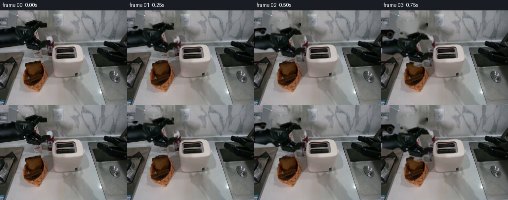
展开代码变化
--- 上一保存版本
+++ 本次保存版本
@@ -0,0 +1,365 @@
+from pathlib import Path
+
+import cv2
+import numpy as np
+from PIL import Image
+
+import artifact_io
+
+
+CASE_DIR = Path(__file__).resolve().parent
+WIDTH = 256
+HEIGHT = 192
+FRAMES = 20
+FPS = 4
+
+
+def poly_mask(points):
+ mask = np.zeros((HEIGHT, WIDTH), dtype=np.uint8)
+ cv2.fillPoly(mask, [np.asarray(points, dtype=np.int32)], 255)
+ return mask
+
+
+def fill_external(mask, minimum_area=1):
+ contours, _ = cv2.findContours(mask, cv2.RETR_EXTERNAL, cv2.CHAIN_APPROX_NONE)
+ filled = np.zeros_like(mask)
+ for contour in contours:
+ if cv2.contourArea(contour) >= minimum_area:
+ cv2.drawContours(filled, [contour], -1, 255, -1)
+ return filled
+
+
+def largest_component(mask):
+ count, labels, stats, _ = cv2.connectedComponentsWithStats(mask, 8)
+ if count <= 1:
+ return mask
+ index = 1 + int(np.argmax(stats[1:, cv2.CC_STAT_AREA]))
+ return np.where(labels == index, 255, 0).astype(np.uint8)
+
+
+def soft_alpha(mask, blur=1):
+ if blur <= 1:
+ return mask.astype(np.float32) / 255.0
+ sigma = (blur - 1) / 2.0
+ return cv2.GaussianBlur(mask, (blur, blur), sigma).astype(np.float32) / 255.0
+
+
+def rgba_from_mask(image, mask, blur=3):
+ alpha = soft_alpha(mask, blur)
+ return np.dstack((image, (alpha * 255.0 + 0.5).astype(np.uint8))), alpha
+
+
+def composite_rgba(dst, rgba):
+ color = rgba[:, :, :3].astype(np.float32)
+ alpha = rgba[:, :, 3:4].astype(np.float32) / 255.0
+ return np.clip(dst.astype(np.float32) * (1.0 - alpha) + color * alpha, 0, 255).astype(np.uint8)
+
+
+def transform_rgba(rgba, source_center, target_center, scale_x, scale_y, angle_deg):
+ angle = np.deg2rad(angle_deg)
+ cosine, sine = np.cos(angle), np.sin(angle)
+ cx, cy = source_center
+ tx, ty = target_center
+ matrix = np.array(
+ [
+ [
+ cosine * scale_x,
+ -sine * scale_y,
+ tx - cosine * scale_x * cx + sine * scale_y * cy,
+ ],
+ [
+ sine * scale_x,
+ cosine * scale_y,
+ ty - sine * scale_x * cx - cosine * scale_y * cy,
+ ],
+ ],
+ dtype=np.float32,
+ )
+ warped = cv2.warpAffine(
+ rgba,
+ matrix,
+ (WIDTH, HEIGHT),
+ flags=cv2.INTER_LINEAR,
+ borderMode=cv2.BORDER_CONSTANT,
+ borderValue=(0, 0, 0, 0),
+ )
+ return warped
+
+
+def smoothstep(value):
+ value = float(np.clip(value, 0.0, 1.0))
+ return value * value * (3.0 - 2.0 * value)
+
+
+def sample_keys(keys, frame):
+ if frame <= keys[0][0]:
+ return keys[0][1]
+ if frame >= keys[-1][0]:
+ return keys[-1][1]
+ for (frame_a, value_a), (frame_b, value_b) in zip(keys[:-1], keys[1:]):
+ if frame_a <= frame <= frame_b:
+ amount = smoothstep((frame - frame_a) / (frame_b - frame_a))
+ return tuple(a + (b - a) * amount for a, b in zip(value_a, value_b))
+ return keys[-1][1]
+
+
+def draw_arm_link(frame, wrist_attach, phase):
+ base = np.array([-18.0, 50.0], dtype=np.float32)
+ wrist = np.array(wrist_attach, dtype=np.float32)
+ elbow = np.array(
+ [
+ max(18.0, wrist[0] - 42.0),
+ min(74.0, max(18.0, 45.0 + (wrist[1] - 50.0) * 0.32)),
+ ],
+ dtype=np.float32,
+ )
+ points = np.round(np.vstack((base, elbow, wrist))).astype(np.int32)
+ cv2.line(frame, tuple(points[0]), tuple(points[1]), (4, 6, 7), 19, cv2.LINE_AA)
+ cv2.line(frame, tuple(points[1]), tuple(points[2]), (7, 10, 11), 14, cv2.LINE_AA)
+ cv2.line(frame, tuple(points[0]), tuple(points[1]), (21, 25, 25), 3, cv2.LINE_AA)
+ cv2.line(frame, tuple(points[1]), tuple(points[2]), (28, 31, 31), 2, cv2.LINE_AA)
+ cv2.circle(frame, tuple(points[1]), 10, (5, 7, 8), -1, cv2.LINE_AA)
+ cv2.circle(frame, tuple(points[1]), 6, (31, 34, 34), -1, cv2.LINE_AA)
+ cv2.circle(frame, tuple(points[1]), 3, (7, 9, 9), -1, cv2.LINE_AA)
+
+ opening = 1.0 + 5.0 * phase
+ finger_x = int(round(wrist[0] + 10.0))
+ finger_y = int(round(wrist[1] + 2.0))
+ cv2.line(
+ frame,
+ (finger_x, finger_y),
+ (finger_x + 5, finger_y + int(round(opening))),
+ (16, 19, 19),
+ 2,
+ cv2.LINE_AA,
+ )
+
+
+def make_toast_alpha(image):
+ polygon = poly_mask(
+ [
+ [55, 111],
+ [61, 102],
+ [76, 100],
+ [88, 110],
+ [87, 133],
+ [80, 145],
+ [69, 155],
+ [54, 149],
+ [46, 133],
+ [47, 119],
+ ]
+ )
+ blue, green, red = cv2.split(image)
+ warm = (
+ (red.astype(np.int16) > green.astype(np.int16) + 3)
+ & (green.astype(np.int16) > blue.astype(np.int16) + 1)
+ & (red > 16)
+ & (red < 195)
+ )
+ seed = np.where(warm, polygon, 0).astype(np.uint8)
+ seed = cv2.morphologyEx(seed, cv2.MORPH_CLOSE, np.ones((5, 5), np.uint8))
+ mask = fill_external(seed, 80)
+ mask = cv2.bitwise_and(mask, cv2.dilate(polygon, np.ones((5, 5), np.uint8)))
+ mask = cv2.erode(mask, np.ones((2, 2), np.uint8), iterations=1)
+ return mask
+
+
+def make_arm_alpha(image):
+ gray = cv2.cvtColor(image, cv2.COLOR_BGR2GRAY)
+ region = poly_mask(
+ [
+ [0, 28],
+ [6, 28],
+ [15, 35],
+ [20, 32],
+ [25, 20],
+ [32, 13],
+ [41, 10],
+ [49, 10],
+ [55, 19],
+ [61, 15],
+ [71, 13],
+ [83, 17],
+ [91, 30],
+ [98, 38],
+ [99, 72],
+ [98, 86],
+ [88, 91],
+ [79, 86],
+ [73, 88],
+ [65, 86],
+ [55, 82],
+ [46, 73],
+ [40, 66],
+ [34, 60],
+ [27, 60],
+ [21, 64],
+ [14, 63],
+ [0, 60],
+ ]
+ )
+ dark = np.where((gray < 120) & (region > 0), 255, 0).astype(np.uint8)
+ dark = cv2.morphologyEx(dark, cv2.MORPH_CLOSE, np.ones((5, 5), np.uint8))
+ arm = largest_component(dark)
+ arm = fill_external(arm, 50)
+ arm = cv2.bitwise_and(arm, region)
+ return cv2.dilate(arm, np.ones((2, 2), np.uint8), iterations=1)
+
+
+def make_toaster_alpha(image):
+ gray = cv2.cvtColor(image, cv2.COLOR_BGR2GRAY)
+ blue, green, red = cv2.split(image)
+ roi = np.zeros_like(gray)
+ roi[64:151, 100:174] = 255
+ body = (
+ (gray > 105)
+ & (np.abs(red.astype(np.int16) - green.astype(np.int16)) < 20)
+ & (np.abs(green.astype(np.int16) - blue.astype(np.int16)) < 20)
+ & (roi > 0)
+ )
+ body = np.where(body, 255, 0).astype(np.uint8)
+ body = cv2.morphologyEx(body, cv2.MORPH_CLOSE, np.ones((5, 5), np.uint8))
+ body = largest_component(body)
+ return fill_external(body, 1000)
+
+
+def render():
+ first = np.asarray(Image.open(CASE_DIR / "first_frame.png").convert("RGB"), dtype=np.uint8)
+ if first.shape != (HEIGHT, WIDTH, 3):
+ raise ValueError(f"Unexpected first frame shape: {first.shape}")
+
+ image = cv2.cvtColor(first, cv2.COLOR_RGB2BGR)
+ arm_mask = make_arm_alpha(image)
+ toast_mask = make_toast_alpha(image)
+ toaster_mask = make_toaster_alpha(image)
+
+ removal = cv2.bitwise_or(arm_mask, toast_mask)
+ clean = cv2.inpaint(image, removal, 7, cv2.INPAINT_TELEA)
+
+ arm_rgba, _ = rgba_from_mask(image, arm_mask, blur=3)
+ toast_rgba, _ = rgba_from_mask(image, toast_mask, blur=3)
+ toaster_rgba, _ = rgba_from_mask(image, toaster_mask, blur=3)
+ back_toast_rgba = toast_rgba.copy()
+ back_toast_rgba[:, :, :3] = np.clip(
+ back_toast_rgba[:, :, :3].astype(np.float32) * 0.82, 0, 255
+ ).astype(np.uint8)
+
+ arm_keys = [
+ (0, (67.0, 83.0)),
+ (4, (70.0, 112.0)),
+ (8, (82.0, 76.0)),
+ (12, (138.0, 58.0)),
+ (16, (141.0, 73.0)),
+ (19, (134.0, 58.0)),
+ ]
+ bread_keys = [
+ (0, (68.0, 129.0)),
+ (4, (68.0, 129.0)),
+ (8, (82.0, 76.0)),
+ (12, (138.0, 56.0)),
+ (16, (139.0, 80.0)),
+ (19, (139.0, 80.0)),
+ ]
+
+ source_center = (68.0, 129.0)
+ original_anchor = np.array((67.0, 83.0), dtype=np.float32)
+ attach_local = np.array((52.0, 37.0), dtype=np.float32)
+ frames = []
+
+ for index in range(FRAMES):
+ if index == 0:
+ frames.append(first.copy())
+ continue
+
+ arm_anchor = np.array(sample_keys(arm_keys, index), dtype=np.float32)
+ bread_center = sample_keys(bread_keys, index)
+ translation = arm_anchor - original_anchor
+
+ lift_amount = smoothstep((index - 4) / 8.0)
+ split = 10.0 * smoothstep((index - 12) / 4.0)
+ rotation = -12.0 * np.sin(np.pi * np.clip((index - 4) / 8.0, 0.0, 1.0))
+ scale_x = 1.0 - 0.66 * lift_amount
+ scale_y = 1.0 - 0.54 * lift_amount
+ phase = 0.0 if index < 13 else smoothstep((index - 13) / 3.0)
+
+ frame = clean.copy()
+ wrist_attach = attach_local + translation
+ draw_arm_link(frame, wrist_attach, phase)
+ frame = composite_rgba(frame, toaster_rgba)
+
+ front_center = (bread_center[0], bread_center[1] + split * 0.55)
+ back_center = (bread_center[0] - 1.5, bread_center[1] - 4.0 - split * 0.45)
+ back_scale_x = scale_x * 0.96
+ back_scale_y = scale_y * 0.96
+
+ toast_layers = []
+ toast_layers.append(
+ transform_rgba(
+ back_toast_rgba,
+ source_center,
+ back_center,
+ back_scale_x,
+ back_scale_y,
+ rotation - 2.0,
+ )
+ )
+ toast_layers.append(
+ transform_rgba(
+ toast_rgba,
+ source_center,
+ front_center,
+ scale_x,
+ scale_y,
+ rotation,
+ )
+ )
+
+ if index < 13:
+ for layer in toast_layers:
+ frame = composite_rgba(frame, layer)
+ else:
+ for layer in toast_layers:
+ frame = composite_rgba(frame, layer)
+ frame = composite_rgba(frame, toaster_rgba)
+
+ matrix = np.array(
+ [[1.0, 0.0, translation[0]], [0.0, 1.0, translation[1]]],
+ dtype=np.float32,
+ )
+ moved_arm = cv2.warpAffine(
+ arm_rgba,
+ matrix,
+ (WIDTH, HEIGHT),
+ flags=cv2.INTER_LINEAR,
+ borderMode=cv2.BORDER_CONSTANT,
+ borderValue=(0, 0, 0, 0),
+ )
+ frame = composite_rgba(frame, moved_arm)
+ frames.append(cv2.cvtColor(frame, cv2.COLOR_BGR2RGB))
+
+ frames = np.stack(frames, axis=0).astype(np.uint8)
+ if not np.array_equal(frames[0], first):
+ raise AssertionError("Frame 0 must match first_frame.png exactly")
+ return frames
+
+
+def main():
+ frames = render()
+ artifact_io.save(frames, CASE_DIR)
+
+ writer = cv2.VideoWriter(
+ str(CASE_DIR / "video.mp4"),
+ cv2.VideoWriter_fourcc(*"mp4v"),
+ FPS,
+ (WIDTH, HEIGHT),
+ )
+ if writer.isOpened():
+ for frame in frames:
+ writer.write(cv2.cvtColor(frame, cv2.COLOR_RGB2BGR))
+ writer.release()
+ print(f"Generated {len(frames)} RGB frames at {WIDTH}x{HEIGHT}, {FPS} fps")
+
+
+if __name__ == "__main__":
+ main()
候选 02播放与检查图
点击播放 · 原生 RGB 像素

展开代码变化
--- 上一保存版本
+++ 本次保存版本
@@ -199,11 +199,15 @@
[0, 60],
]
)
- dark = np.where((gray < 120) & (region > 0), 255, 0).astype(np.uint8)
+ # Keep the fixed forearm base in the background plate. Only the wrist and
+ # parallel gripper translate during manipulation.
+ moving_region = region.copy()
+ moving_region[:, :34] = 0
+ dark = np.where((gray < 120) & (moving_region > 0), 255, 0).astype(np.uint8)
dark = cv2.morphologyEx(dark, cv2.MORPH_CLOSE, np.ones((5, 5), np.uint8))
arm = largest_component(dark)
arm = fill_external(arm, 50)
- arm = cv2.bitwise_and(arm, region)
+ arm = cv2.bitwise_and(arm, moving_region)
return cv2.dilate(arm, np.ones((2, 2), np.uint8), iterations=1)
@@ -247,19 +251,23 @@
arm_keys = [
(0, (67.0, 83.0)),
- (4, (70.0, 112.0)),
- (8, (82.0, 76.0)),
- (12, (138.0, 58.0)),
- (16, (141.0, 73.0)),
- (19, (134.0, 58.0)),
+ (3, (69.0, 118.0)),
+ (4, (69.0, 120.0)),
+ (8, (81.0, 73.0)),
+ (12, (136.0, 56.0)),
+ (14, (142.0, 57.0)),
+ (16, (144.0, 64.0)),
+ (18, (143.0, 49.0)),
+ (19, (143.0, 44.0)),
]
bread_keys = [
(0, (68.0, 129.0)),
(4, (68.0, 129.0)),
- (8, (82.0, 76.0)),
- (12, (138.0, 56.0)),
- (16, (139.0, 80.0)),
- (19, (139.0, 80.0)),
+ (8, (81.0, 77.0)),
+ (12, (137.0, 55.0)),
+ (14, (143.0, 57.0)),
+ (16, (145.0, 63.0)),
+ (19, (145.0, 65.0)),
]
source_center = (68.0, 129.0)
@@ -277,7 +285,8 @@
translation = arm_anchor - original_anchor
lift_amount = smoothstep((index - 4) / 8.0)
- split = 10.0 * smoothstep((index - 12) / 4.0)
+ split_x = 13.5 * smoothstep((index - 12) / 3.0)
+ split_y = 1.5 * smoothstep((index - 12) / 3.0)
rotation = -12.0 * np.sin(np.pi * np.clip((index - 4) / 8.0, 0.0, 1.0))
scale_x = 1.0 - 0.66 * lift_amount
scale_y = 1.0 - 0.54 * lift_amount
@@ -288,8 +297,8 @@
draw_arm_link(frame, wrist_attach, phase)
frame = composite_rgba(frame, toaster_rgba)
- front_center = (bread_center[0], bread_center[1] + split * 0.55)
- back_center = (bread_center[0] - 1.5, bread_center[1] - 4.0 - split * 0.45)
+ front_center = (bread_center[0] + split_x, bread_center[1] + split_y)
+ back_center = (bread_center[0] - split_x, bread_center[1] - split_y)
back_scale_x = scale_x * 0.96
back_scale_y = scale_y * 0.96
候选 03播放与检查图
点击播放 · 原生 RGB 像素

展开代码变化
--- 上一保存版本
+++ 本次保存版本
@@ -212,20 +212,29 @@
def make_toaster_alpha(image):
- gray = cv2.cvtColor(image, cv2.COLOR_BGR2GRAY)
- blue, green, red = cv2.split(image)
- roi = np.zeros_like(gray)
- roi[64:151, 100:174] = 255
- body = (
- (gray > 105)
- & (np.abs(red.astype(np.int16) - green.astype(np.int16)) < 20)
- & (np.abs(green.astype(np.int16) - blue.astype(np.int16)) < 20)
- & (roi > 0)
- )
- body = np.where(body, 255, 0).astype(np.uint8)
- body = cv2.morphologyEx(body, cv2.MORPH_CLOSE, np.ones((5, 5), np.uint8))
- body = largest_component(body)
- return fill_external(body, 1000)
+ # The complete visible toaster silhouette, including the black slots.
+ return poly_mask(
+ [
+ [103, 72],
+ [109, 69],
+ [114, 65],
+ [126, 65],
+ [140, 65],
+ [153, 67],
+ [164, 73],
+ [171, 83],
+ [173, 99],
+ [171, 132],
+ [169, 143],
+ [165, 146],
+ [147, 149],
+ [127, 149],
+ [112, 148],
+ [103, 145],
+ [101, 138],
+ [102, 98],
+ ]
+ )
def render():
@@ -330,7 +339,11 @@
else:
for layer in toast_layers:
frame = composite_rgba(frame, layer)
- frame = composite_rgba(frame, toaster_rgba)
+ # Bread remains visible above the toaster rim; the body occludes
+ # everything below it, as a physical two-slot toaster would.
+ toaster_front = toaster_rgba.copy()
+ toaster_front[toaster_front[:, :, 1] < 68, 3] = 0
+ frame = composite_rgba(frame, toaster_front)
matrix = np.array(
[[1.0, 0.0, translation[0]], [0.0, 1.0, translation[1]]],
候选 04播放与检查图
点击播放 · 原生 RGB 像素

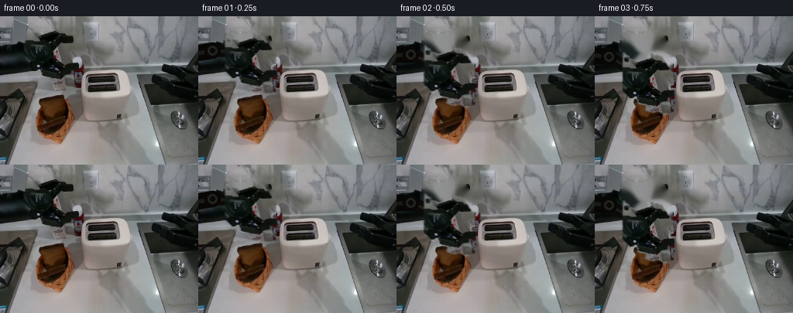
展开代码变化
--- 上一保存版本
+++ 本次保存版本
@@ -8,10 +8,8 @@
CASE_DIR = Path(__file__).resolve().parent
-WIDTH = 256
-HEIGHT = 192
-FRAMES = 20
-FPS = 4
+WIDTH, HEIGHT = 256, 192
+FRAMES, FPS = 20, 4
def poly_mask(points):
@@ -20,62 +18,70 @@
return mask
-def fill_external(mask, minimum_area=1):
- contours, _ = cv2.findContours(mask, cv2.RETR_EXTERNAL, cv2.CHAIN_APPROX_NONE)
- filled = np.zeros_like(mask)
- for contour in contours:
- if cv2.contourArea(contour) >= minimum_area:
- cv2.drawContours(filled, [contour], -1, 255, -1)
- return filled
-
-
-def largest_component(mask):
- count, labels, stats, _ = cv2.connectedComponentsWithStats(mask, 8)
- if count <= 1:
- return mask
- index = 1 + int(np.argmax(stats[1:, cv2.CC_STAT_AREA]))
- return np.where(labels == index, 255, 0).astype(np.uint8)
-
-
-def soft_alpha(mask, blur=1):
- if blur <= 1:
- return mask.astype(np.float32) / 255.0
- sigma = (blur - 1) / 2.0
- return cv2.GaussianBlur(mask, (blur, blur), sigma).astype(np.float32) / 255.0
-
-
-def rgba_from_mask(image, mask, blur=3):
- alpha = soft_alpha(mask, blur)
- return np.dstack((image, (alpha * 255.0 + 0.5).astype(np.uint8))), alpha
-
-
-def composite_rgba(dst, rgba):
- color = rgba[:, :, :3].astype(np.float32)
- alpha = rgba[:, :, 3:4].astype(np.float32) / 255.0
- return np.clip(dst.astype(np.float32) * (1.0 - alpha) + color * alpha, 0, 255).astype(np.uint8)
-
-
-def transform_rgba(rgba, source_center, target_center, scale_x, scale_y, angle_deg):
- angle = np.deg2rad(angle_deg)
- cosine, sine = np.cos(angle), np.sin(angle)
+def smoothstep(value):
+ value = float(np.clip(value, 0.0, 1.0))
+ return value * value * (3.0 - 2.0 * value)
+
+
+def sample_keys(keys, frame):
+ if frame <= keys[0][0]:
+ return keys[0][1]
+ if frame >= keys[-1][0]:
+ return keys[-1][1]
+ for (fa, va), (fb, vb) in zip(keys[:-1], keys[1:]):
+ if fa <= frame <= fb:
+ t = smoothstep((frame - fa) / (fb - fa))
+ return tuple(a + (b - a) * t for a, b in zip(va, vb))
+ return keys[-1][1]
+
+
+def build_background(image):
+ arm_region = poly_mask(
+ [
+ [0, 28], [7, 27], [15, 34], [20, 30], [24, 20], [32, 12],
+ [42, 8], [50, 10], [55, 19], [62, 14], [72, 12], [83, 17],
+ [91, 30], [98, 38], [99, 74], [94, 85], [86, 90], [78, 86],
+ [70, 87], [61, 84], [53, 78], [47, 69], [40, 62], [33, 57],
+ [26, 57], [20, 63], [13, 62], [0, 61],
+ ]
+ )
+ bread_region = poly_mask(
+ [
+ [52, 111], [60, 100], [77, 98], [89, 109], [90, 124],
+ [86, 140], [78, 152], [67, 159], [54, 154], [46, 144],
+ [43, 130], [46, 117],
+ ]
+ )
+ mask = cv2.bitwise_or(arm_region, bread_region)
+ return cv2.inpaint(image, mask, 9, cv2.INPAINT_TELEA)
+
+
+def build_toast(image):
+ mask = poly_mask(
+ [
+ [56, 111], [61, 103], [74, 100], [84, 107], [88, 118],
+ [87, 132], [80, 144], [70, 152], [60, 156], [52, 149],
+ [47, 138], [47, 125],
+ ]
+ )
+ mask = cv2.erode(mask, np.ones((2, 2), np.uint8), iterations=1)
+ mask = cv2.GaussianBlur(mask, (3, 3), 0)
+ return np.dstack((image, mask))
+
+
+def transform_rgba(rgba, source_center, target_center, sx, sy, angle):
+ radians = np.deg2rad(angle)
+ c, s = np.cos(radians), np.sin(radians)
cx, cy = source_center
tx, ty = target_center
matrix = np.array(
[
- [
- cosine * scale_x,
- -sine * scale_y,
- tx - cosine * scale_x * cx + sine * scale_y * cy,
- ],
- [
- sine * scale_x,
- cosine * scale_y,
- ty - sine * scale_x * cx - cosine * scale_y * cy,
- ],
+ [c * sx, -s * sy, tx - c * sx * cx + s * sy * cy],
+ [s * sx, c * sy, ty - s * sx * cx - c * sy * cy],
],
dtype=np.float32,
)
- warped = cv2.warpAffine(
+ return cv2.warpAffine(
rgba,
matrix,
(WIDTH, HEIGHT),
@@ -83,205 +89,89 @@
borderMode=cv2.BORDER_CONSTANT,
borderValue=(0, 0, 0, 0),
)
- return warped
-
-
-def smoothstep(value):
- value = float(np.clip(value, 0.0, 1.0))
- return value * value * (3.0 - 2.0 * value)
-
-
-def sample_keys(keys, frame):
- if frame <= keys[0][0]:
- return keys[0][1]
- if frame >= keys[-1][0]:
- return keys[-1][1]
- for (frame_a, value_a), (frame_b, value_b) in zip(keys[:-1], keys[1:]):
- if frame_a <= frame <= frame_b:
- amount = smoothstep((frame - frame_a) / (frame_b - frame_a))
- return tuple(a + (b - a) * amount for a, b in zip(value_a, value_b))
- return keys[-1][1]
-
-
-def draw_arm_link(frame, wrist_attach, phase):
- base = np.array([-18.0, 50.0], dtype=np.float32)
- wrist = np.array(wrist_attach, dtype=np.float32)
- elbow = np.array(
- [
- max(18.0, wrist[0] - 42.0),
- min(74.0, max(18.0, 45.0 + (wrist[1] - 50.0) * 0.32)),
- ],
- dtype=np.float32,
- )
- points = np.round(np.vstack((base, elbow, wrist))).astype(np.int32)
- cv2.line(frame, tuple(points[0]), tuple(points[1]), (4, 6, 7), 19, cv2.LINE_AA)
- cv2.line(frame, tuple(points[1]), tuple(points[2]), (7, 10, 11), 14, cv2.LINE_AA)
- cv2.line(frame, tuple(points[0]), tuple(points[1]), (21, 25, 25), 3, cv2.LINE_AA)
- cv2.line(frame, tuple(points[1]), tuple(points[2]), (28, 31, 31), 2, cv2.LINE_AA)
- cv2.circle(frame, tuple(points[1]), 10, (5, 7, 8), -1, cv2.LINE_AA)
- cv2.circle(frame, tuple(points[1]), 6, (31, 34, 34), -1, cv2.LINE_AA)
- cv2.circle(frame, tuple(points[1]), 3, (7, 9, 9), -1, cv2.LINE_AA)
-
- opening = 1.0 + 5.0 * phase
- finger_x = int(round(wrist[0] + 10.0))
- finger_y = int(round(wrist[1] + 2.0))
- cv2.line(
- frame,
- (finger_x, finger_y),
- (finger_x + 5, finger_y + int(round(opening))),
- (16, 19, 19),
- 2,
- cv2.LINE_AA,
- )
-
-
-def make_toast_alpha(image):
- polygon = poly_mask(
- [
- [55, 111],
- [61, 102],
- [76, 100],
- [88, 110],
- [87, 133],
- [80, 145],
- [69, 155],
- [54, 149],
- [46, 133],
- [47, 119],
- ]
- )
- blue, green, red = cv2.split(image)
- warm = (
- (red.astype(np.int16) > green.astype(np.int16) + 3)
- & (green.astype(np.int16) > blue.astype(np.int16) + 1)
- & (red > 16)
- & (red < 195)
- )
- seed = np.where(warm, polygon, 0).astype(np.uint8)
- seed = cv2.morphologyEx(seed, cv2.MORPH_CLOSE, np.ones((5, 5), np.uint8))
- mask = fill_external(seed, 80)
- mask = cv2.bitwise_and(mask, cv2.dilate(polygon, np.ones((5, 5), np.uint8)))
- mask = cv2.erode(mask, np.ones((2, 2), np.uint8), iterations=1)
- return mask
-
-
-def make_arm_alpha(image):
- gray = cv2.cvtColor(image, cv2.COLOR_BGR2GRAY)
- region = poly_mask(
- [
- [0, 28],
- [6, 28],
- [15, 35],
- [20, 32],
- [25, 20],
- [32, 13],
- [41, 10],
- [49, 10],
- [55, 19],
- [61, 15],
- [71, 13],
- [83, 17],
- [91, 30],
- [98, 38],
- [99, 72],
- [98, 86],
- [88, 91],
- [79, 86],
- [73, 88],
- [65, 86],
- [55, 82],
- [46, 73],
- [40, 66],
- [34, 60],
- [27, 60],
- [21, 64],
- [14, 63],
- [0, 60],
- ]
- )
- # Keep the fixed forearm base in the background plate. Only the wrist and
- # parallel gripper translate during manipulation.
- moving_region = region.copy()
- moving_region[:, :34] = 0
- dark = np.where((gray < 120) & (moving_region > 0), 255, 0).astype(np.uint8)
- dark = cv2.morphologyEx(dark, cv2.MORPH_CLOSE, np.ones((5, 5), np.uint8))
- arm = largest_component(dark)
- arm = fill_external(arm, 50)
- arm = cv2.bitwise_and(arm, moving_region)
- return cv2.dilate(arm, np.ones((2, 2), np.uint8), iterations=1)
-
-
-def make_toaster_alpha(image):
- # The complete visible toaster silhouette, including the black slots.
- return poly_mask(
- [
- [103, 72],
- [109, 69],
- [114, 65],
- [126, 65],
- [140, 65],
- [153, 67],
- [164, 73],
- [171, 83],
- [173, 99],
- [171, 132],
- [169, 143],
- [165, 146],
- [147, 149],
- [127, 149],
- [112, 148],
- [103, 145],
- [101, 138],
- [102, 98],
- ]
- )
+
+
+def composite(frame, rgba):
+ alpha = rgba[:, :, 3:4].astype(np.float32) / 255.0
+ color = rgba[:, :, :3].astype(np.float32)
+ return np.clip(
+ frame.astype(np.float32) * (1.0 - alpha) + color * alpha, 0, 255
+ ).astype(np.uint8)
+
+
+def rounded_segment(frame, p0, p1, width, color, outline=None):
+ p0 = tuple(np.round(p0).astype(int))
+ p1 = tuple(np.round(p1).astype(int))
+ if outline is not None:
+ cv2.line(frame, p0, p1, outline, width + 3, cv2.LINE_AA)
+ cv2.line(frame, p0, p1, color, width, cv2.LINE_AA)
+ cv2.circle(frame, p0, width // 2, color, -1, cv2.LINE_AA)
+ cv2.circle(frame, p1, width // 2, color, -1, cv2.LINE_AA)
+
+
+def draw_arm(frame, wrist, grip_open, grasp_angle):
+ wrist = np.asarray(wrist, dtype=np.float32)
+ shoulder = np.array([-11.0, 42.0], dtype=np.float32)
+ direction = wrist - shoulder
+ elbow = shoulder + direction * 0.50
+ elbow += np.array([-5.0, -22.0], dtype=np.float32)
+
+ shadow = frame.copy()
+ rounded_segment(shadow, shoulder + (5, 8), elbow + (5, 8), 20, (92, 96, 96))
+ rounded_segment(shadow, elbow + (5, 8), wrist + (5, 8), 15, (92, 96, 96))
+ shadow = cv2.GaussianBlur(shadow, (9, 9), 0)
+ cv2.addWeighted(shadow, 0.20, frame, 0.80, 0, frame)
+
+ rounded_segment(frame, shoulder, elbow, 20, (9, 12, 13), (2, 4, 5))
+ rounded_segment(frame, elbow, wrist, 14, (13, 17, 18), (3, 5, 6))
+ offset = np.array([0, -4], dtype=np.float32)
+ rounded_segment(frame, shoulder + offset, elbow + offset, 3, (45, 50, 49))
+ rounded_segment(frame, elbow + offset, wrist + offset, 2, (52, 57, 56))
+ cv2.circle(frame, tuple(np.round(elbow).astype(int)), 11, (5, 7, 8), -1, cv2.LINE_AA)
+ cv2.circle(frame, tuple(np.round(elbow).astype(int)), 8, (28, 33, 33), 2, cv2.LINE_AA)
+ cv2.circle(frame, tuple(np.round(elbow).astype(int)), 3, (7, 9, 9), -1, cv2.LINE_AA)
+
+ angle = np.deg2rad(grasp_angle)
+ down = np.array([np.sin(angle), np.cos(angle)], dtype=np.float32)
+ side = np.array([np.cos(angle), -np.sin(angle)], dtype=np.float32)
+ palm = wrist + down * 5.0
+ cv2.circle(frame, tuple(np.round(palm).astype(int)), 9, (8, 11, 12), -1, cv2.LINE_AA)
+ cv2.circle(frame, tuple(np.round(palm).astype(int)), 6, (33, 37, 37), 1, cv2.LINE_AA)
+
+ spread = 5.0 + grip_open * 4.0
+ finger_start = palm + down * 3.0
+ finger_end = finger_start + down * (16.0 - grip_open * 2.0)
+ for sign in (-1.0, 1.0):
+ root = finger_start + side * spread * sign
+ tip = finger_end + side * (spread - 2.0 + grip_open) * sign
+ rounded_segment(frame, root, tip, 5, (10, 13, 14), (2, 3, 4))
+ cv2.circle(frame, tuple(np.round(tip).astype(int)), 3, (5, 7, 8), -1, cv2.LINE_AA)
def render():
- first = np.asarray(Image.open(CASE_DIR / "first_frame.png").convert("RGB"), dtype=np.uint8)
- if first.shape != (HEIGHT, WIDTH, 3):
- raise ValueError(f"Unexpected first frame shape: {first.shape}")
-
+ first = np.asarray(Image.open(CASE_DIR / "first_frame.png").convert("RGB"))
image = cv2.cvtColor(first, cv2.COLOR_RGB2BGR)
- arm_mask = make_arm_alpha(image)
- toast_mask = make_toast_alpha(image)
- toaster_mask = make_toaster_alpha(image)
-
- removal = cv2.bitwise_or(arm_mask, toast_mask)
- clean = cv2.inpaint(image, removal, 7, cv2.INPAINT_TELEA)
-
- arm_rgba, _ = rgba_from_mask(image, arm_mask, blur=3)
- toast_rgba, _ = rgba_from_mask(image, toast_mask, blur=3)
- toaster_rgba, _ = rgba_from_mask(image, toaster_mask, blur=3)
- back_toast_rgba = toast_rgba.copy()
- back_toast_rgba[:, :, :3] = np.clip(
- back_toast_rgba[:, :, :3].astype(np.float32) * 0.82, 0, 255
- ).astype(np.uint8)
-
- arm_keys = [
- (0, (67.0, 83.0)),
- (3, (69.0, 118.0)),
- (4, (69.0, 120.0)),
- (8, (81.0, 73.0)),
- (12, (136.0, 56.0)),
- (14, (142.0, 57.0)),
- (16, (144.0, 64.0)),
- (18, (143.0, 49.0)),
- (19, (143.0, 44.0)),
+ background = build_background(image)
+ toast = build_toast(image)
+ darker = toast.copy()
+ darker[:, :, :3] = np.clip(darker[:, :, :3].astype(np.float32) * 0.80, 0, 255).astype(np.uint8)
+
+ wrist_keys = [
+ (0, (67, 83)), (2, (68, 91)), (4, (69, 105)), (5, (71, 94)),
+ (7, (75, 79)), (9, (87, 67)), (11, (108, 59)), (13, (136, 54)),
+ (15, (142, 53)), (16, (142, 66)), (18, (139, 53)), (19, (136, 44)),
]
bread_keys = [
- (0, (68.0, 129.0)),
- (4, (68.0, 129.0)),
- (8, (81.0, 77.0)),
- (12, (137.0, 55.0)),
- (14, (143.0, 57.0)),
- (16, (145.0, 63.0)),
- (19, (145.0, 65.0)),
+ (0, (68, 129)), (4, (68, 129)), (5, (71, 118)), (7, (76, 101)),
+ (9, (88, 91)), (11, (109, 83)), (13, (137, 79)), (15, (141, 77)),
+ (19, (141, 77)),
]
-
+ scale_keys = [
+ (0, (1.0, 1.0)), (4, (1.0, 1.0)), (7, (0.78, 0.92)),
+ (11, (0.46, 0.72)), (14, (0.32, 0.55)), (19, (0.32, 0.55)),
+ ]
+ split_keys = [(0, (1.0,)), (12, (2.0,)), (14, (6.5,)), (19, (7.0,))]
source_center = (68.0, 129.0)
- original_anchor = np.array((67.0, 83.0), dtype=np.float32)
- attach_local = np.array((52.0, 37.0), dtype=np.float32)
frames = []
for index in range(FRAMES):
@@ -289,78 +179,34 @@
frames.append(first.copy())
continue
- arm_anchor = np.array(sample_keys(arm_keys, index), dtype=np.float32)
+ wrist = np.array(sample_keys(wrist_keys, index), dtype=np.float32)
bread_center = sample_keys(bread_keys, index)
- translation = arm_anchor - original_anchor
-
- lift_amount = smoothstep((index - 4) / 8.0)
- split_x = 13.5 * smoothstep((index - 12) / 3.0)
- split_y = 1.5 * smoothstep((index - 12) / 3.0)
- rotation = -12.0 * np.sin(np.pi * np.clip((index - 4) / 8.0, 0.0, 1.0))
- scale_x = 1.0 - 0.66 * lift_amount
- scale_y = 1.0 - 0.54 * lift_amount
- phase = 0.0 if index < 13 else smoothstep((index - 13) / 3.0)
-
- frame = clean.copy()
- wrist_attach = attach_local + translation
- draw_arm_link(frame, wrist_attach, phase)
- frame = composite_rgba(frame, toaster_rgba)
-
- front_center = (bread_center[0] + split_x, bread_center[1] + split_y)
- back_center = (bread_center[0] - split_x, bread_center[1] - split_y)
- back_scale_x = scale_x * 0.96
- back_scale_y = scale_y * 0.96
-
- toast_layers = []
- toast_layers.append(
- transform_rgba(
- back_toast_rgba,
- source_center,
- back_center,
- back_scale_x,
- back_scale_y,
- rotation - 2.0,
- )
- )
- toast_layers.append(
- transform_rgba(
- toast_rgba,
- source_center,
- front_center,
- scale_x,
- scale_y,
- rotation,
- )
- )
-
- if index < 13:
- for layer in toast_layers:
- frame = composite_rgba(frame, layer)
- else:
- for layer in toast_layers:
- frame = composite_rgba(frame, layer)
- # Bread remains visible above the toaster rim; the body occludes
- # everything below it, as a physical two-slot toaster would.
- toaster_front = toaster_rgba.copy()
- toaster_front[toaster_front[:, :, 1] < 68, 3] = 0
- frame = composite_rgba(frame, toaster_front)
-
- matrix = np.array(
- [[1.0, 0.0, translation[0]], [0.0, 1.0, translation[1]]],
- dtype=np.float32,
- )
- moved_arm = cv2.warpAffine(
- arm_rgba,
- matrix,
- (WIDTH, HEIGHT),
- flags=cv2.INTER_LINEAR,
- borderMode=cv2.BORDER_CONSTANT,
- borderValue=(0, 0, 0, 0),
- )
- frame = composite_rgba(frame, moved_arm)
+ sx, sy = sample_keys(scale_keys, index)
+ split = sample_keys(split_keys, index)[0]
+ grip_open = float(np.clip((index - 15) / 3.0, 0.0, 1.0))
+ if index < 4:
+ grip_open = 1.0
+ grasp_angle = float(np.clip(-4.0 + index * 0.8, -4.0, 5.0))
+
+ frame = background.copy()
+ toast_angle = -6.0 * np.sin(np.pi * np.clip((index - 4) / 9.0, 0.0, 1.0))
+ back_center = (bread_center[0] - split * 0.45, bread_center[1] - 1.5)
+ front_center = (bread_center[0] + split * 0.45, bread_center[1] + 1.0)
+ back = transform_rgba(darker, source_center, back_center, sx * 0.97, sy * 0.97, toast_angle - 2.0)
+ front = transform_rgba(toast, source_center, front_center, sx, sy, toast_angle)
+ frame = composite(frame, back)
+ frame = composite(frame, front)
+
+ toaster_body = np.zeros_like(frame)
+ toaster_body[87:151, 101:174] = image[87:151, 101:174]
+ body_mask = np.zeros((HEIGHT, WIDTH), dtype=np.uint8)
+ body_mask[87:151, 101:174] = 255
+ frame = composite(frame, np.dstack((toaster_body, body_mask)))
+
+ draw_arm(frame, wrist, grip_open, grasp_angle)
frames.append(cv2.cvtColor(frame, cv2.COLOR_BGR2RGB))
- frames = np.stack(frames, axis=0).astype(np.uint8)
+ frames = np.stack(frames).astype(np.uint8)
if not np.array_equal(frames[0], first):
raise AssertionError("Frame 0 must match first_frame.png exactly")
return frames
@@ -369,7 +215,6 @@
def main():
frames = render()
artifact_io.save(frames, CASE_DIR)
-
writer = cv2.VideoWriter(
str(CASE_DIR / "video.mp4"),
cv2.VideoWriter_fourcc(*"mp4v"),
@@ -380,7 +225,7 @@
for frame in frames:
writer.write(cv2.cvtColor(frame, cv2.COLOR_RGB2BGR))
writer.release()
- print(f"Generated {len(frames)} RGB frames at {WIDTH}x{HEIGHT}, {FPS} fps")
+ print(f"Generated {len(frames)} frames at {WIDTH}x{HEIGHT}, {FPS} fps")
if __name__ == "__main__":
候选 05播放与检查图
可观测工具轨迹
实际执行的命令与返回图片。
命令 1exit 0
/bin/bash -c "pwd && rg --files -g 'prompt.txt' -g 'GENERATION_RULES.md' -g '*.py' -g '*.sh' -g '*.json' -g '*.md' | sed -n '1,160p'"
命令 2exit 0
/bin/bash -c 'git status --short && ls -la'
命令 3exit 0
/bin/bash -c 'cat GENERATION_RULES.md'
命令 4exit 0
/bin/bash -c "cat prompt.txt && printf '\\n--- task_spec ---\\n' && cat task_spec.json"
命令 5exit 0
/bin/bash -c "sed -n '1,240p' artifact_io.py"
命令 6exit 0
/bin/bash -c 'file first_frame.png && identify first_frame.png 2>/dev/null || true'
命令 7exit 0
/bin/bash -c "python - <<'PY'
from PIL import Image
im=Image.open('first_frame.png')
print(im.size, im.mode)
for p in [(70,70),(60,130),(80,130),(130,100),(140,90),(100,60),(100,120),(10,100)]:
print(p, im.getpixel(p))
PY"命令 8exit 0
/bin/bash -c "python - <<'PY'
from PIL import Image
im=Image.open('first_frame.png')
for name,box in [('left',(0,0,130,120)),('bread',(30,85,115,175)),('toaster',(90,50,190,155)),('full2',(0,0,256,192))]:
crop=im.crop(box)
crop.resize((crop.width*4,crop.height*4),Image.Resampling.NEAREST).save('.tmp/'+name+'.png')
PY"命令 9exit 0
/bin/bash -c "python - <<'PY'
from PIL import Image
im=Image.open('first_frame.png')
im.crop((20,80,110,175)).resize((720,760),Image.Resampling.NEAREST).save('.tmp/bread8.png')
im.crop((100,40,190,155)).resize((720,920),Image.Resampling.NEAREST).save('.tmp/toaster8.png')
PY"命令 10exit 0
/bin/bash -c "python - <<'PY'
from PIL import Image
import numpy as np
im=np.array(Image.open('first_frame.png'))
# print ASCII coarse segmentation via dark/brown/bright
for y in range(80,176,8):
s=''
for x in range(20,111,4):
r,g,b=im[y:y+8,x:x+4].mean((0,1))
if r>110 and g>80: c='T' # toaster / bright
elif r>45 and r>g*1.3 and g>b*1.25: c='B'
elif r+g+b<120: c='#'
elif r+g+b<240: c='.'
else: c=' '
s+=c
print(f'{y:3}',s)
PY"命令 11exit 0
/bin/bash -c "python - <<'PY' mods=['cv2','scipy','skimage','imageio','av'] for m in mods: try: mod=__import__(m); print(m,'ok',getattr(mod,'__version__','')) except Exception as e: print(m,'no',type(e).__name__) PY"
命令 12exit 0
/bin/bash -c "python - <<'PY'
from PIL import Image
im=Image.open('first_frame.png')
im.crop((35,90,110,165)).resize((900,900),Image.Resampling.LANCZOS).save('.tmp/bread_lanczos.png')
PY"命令 13exit 0
/bin/bash -c "python - <<'PY'
from PIL import Image
import numpy as np
im=np.array(Image.open('first_frame.png')).astype(float)
# sample rows across bread
for y in [104,108,112,116,120,124,128,132,136,140,144,148,152,156]:
print(y, [(x,tuple(im[y,x].astype(int))) for x in [50,55,60,65,70,75,80,85,90,95]])
PY"命令 14exit 0
/bin/bash -c "python - <<'PY'
from PIL import Image
import numpy as np
im=np.array(Image.open('first_frame.png'))
# save red/dark mask overlay bread area
crop=im[90:170,35:110]
r,g,b=crop[:,:,0].astype(float),crop[:,:,1].astype(float),crop[:,:,2].astype(float)
# rough bread pixels are dark with red dominance
m=(r>30)&(r<155)&(r>g*1.15)&(g>b*.9)&(b<90)
out=crop.copy(); out[m]=[255,0,255]
Image.fromarray(out).resize((750,800),Image.Resampling.NEAREST).save('.tmp/breadmask.png')
print('mask',m.sum())
PY"命令 15exit 0
/bin/bash -c "python - <<'PY'
import cv2
print('grabcut', hasattr(cv2,'grabCut'))
PY"命令 16exit 0
/bin/bash -c "python - <<'PY'
import cv2, numpy as np
from PIL import Image
im=cv2.imread('first_frame.png')
# crop bbox around bread, keep basket out mostly
x0,y0,x1,y1=42,98,96,156
crop=im[y0:y1,x0:x1]
mask=np.zeros(crop.shape[:2],np.uint8)
bgd=np.zeros((1,65),np.float64); fgd=np.zeros((1,65),np.float64)
rect=(3,4,crop.shape[1]-4,crop.shape[0]-3)
cv2.grabCut(crop,mask,rect,bgd,fgd,7,cv2.GC_INIT_WITH_RECT)
m=np.isin(mask,[1,3]).astype(np.uint8)*255
# close / blur
m=cv2.morphologyEx(m,cv2.MORPH_CLOSE,np.ones((3,3),np.uint8))
cv2.imwrite('.tmp/grabmask.png',m)
out=crop.copy(); out[m>0]=[255,0,255]
cv2.imwrite('.tmp/graboverlay.png',out)
PY"命令 17exit 0
/bin/bash -c "python - <<'PY'
from PIL import Image,ImageDraw,ImageFont
im=Image.open('first_frame.png').crop((30,80,120,170)).resize((900,900),Image.Resampling.NEAREST)
d=ImageDraw.Draw(im)
for x in range(0,91,10):
d.line((x*10,0,x*10,900),fill=(0,255,0),width=1)
d.text((x*10+2,2),str(x+30),fill=(0,255,0))
for y in range(0,91,10):
d.line((0,y*10,900,y*10),fill=(0,255,0),width=1)
d.text((2,y*10+2),str(y+80),fill=(0,255,0))
im.save('.tmp/breadgrid.png')
PY"命令 18exit 0
/bin/bash -c "python - <<'PY'
from PIL import Image
im=Image.open('first_frame.png')
im.crop((0,0,100,90)).resize((1000,900),Image.Resampling.NEAREST).save('.tmp/gripper10.png')
PY"命令 19exit 0
/bin/bash -c "python - <<'PY'
import cv2, numpy as np
from PIL import Image
im=cv2.imread('first_frame.png')
g=cv2.cvtColor(im,cv2.COLOR_BGR2GRAY)
# robot threshold dark and broad polygon to exclude right/background
poly=np.zeros(g.shape,np.uint8)
pts=np.array([[0,30],[8,30],[16,35],[22,30],[24,17],[34,8],[48,8],[53,19],[59,15],[69,13],[80,17],[87,30],[99,34],[99,83],[89,88],[79,84],[70,93],[55,88],[45,80],[39,69],[31,60],[23,60],[16,68],[0,64]],np.int32)
cv2.fillPoly(poly,[pts],255)
rm=((g<100)&(poly>0)).astype(np.uint8)*255
# Keep connected comps large, close + dilate to include highlights/edges
rm=cv2.morphologyEx(rm,cv2.MORPH_CLOSE,np.ones((7,7),np.uint8))
rm=cv2.dilate(rm,np.ones((3,3),np.uint8),iterations=1)
rm=cv2.bitwise_and(rm,poly)
# bread mask based polygon (two toast shape) + hue region, manually poly
bpoly=np.zeros(g.shape,np.uint8)
bpts=np.array([[53,110],[61,99],[79,98],[91,111],[88,135],[80,148],[66,157],[51,148],[45,132],[47,118]],np.int32)
cv2.fillPoly(bpoly,[bpts],255)
b,gc,r=cv2.split(im)
bm=((bpoly>0)&(r.astype(int)>gc.astype(int)+5)&(gc.astype(int)>b.astype(int)+2)&(r<190)).astype(np.uint8)*255
bm=cv2.morphologyEx(bm,cv2.MORPH_CLOSE,np.ones((5,5),np.uint8))
# fill holes and union polygon maybe
# overlay
out=im.copy(); out[rm>0]=[255,0,255]; out[bm>0]=[0,255,0]
cv2.imwrite('.tmp/masks.png',out)
# clean inpaint each union
both=cv2.bitwise_or(rm,bm)
clean=cv2.inpaint(im,both,7,cv2.INPAINT_TELEA)
cv2.imwrite('.tmp/clean.png',clean)
cv2.imwrite('.tmp/rmask.png',rm); cv2.imwrite('.tmp/bmask.png',bm)
PY"命令 20exit 0
/bin/bash -c "python - <<'PY' import cv2 import numpy as np for p in ['first_frame.png','.tmp/clean.png']: im=cv2.imread(p) print(p,im.shape) PY"
命令 21exit 0
/bin/bash -c "python - <<'PY'
import cv2, numpy as np
im=cv2.imread('first_frame.png')
# polygon covering basket & bread roughly with feather 0. use dilation and multiscale inpaint
m=np.zeros(im.shape[:2],np.uint8)
pts=np.array([[30,133],[44,118],[48,103],[61,94],[82,96],[93,107],[100,123],[96,143],[92,160],[78,170],[56,172],[39,164],[29,150]],np.int32)
cv2.fillPoly(m,[pts],255)
# exclude toaster on right
m[:,95:]=0
# inpaint
out=cv2.inpaint(im,m,9,cv2.INPAINT_TELEA)
cv2.imwrite('.tmp/clean_basket.png',out)
# Toaster masks left edge over basket region will be painted but later toaster pasted atop
cv2.imwrite('.tmp/basket_mask.png',m)
PY"命令 22exit 0
/bin/bash -c "python - <<'PY'
import cv2, numpy as np
im=cv2.imread('first_frame.png')
m=np.zeros(im.shape[:2],np.uint8)
pts=np.array([[0,0],[35,0],[44,4],[56,4],[66,13],[81,14],[90,27],[96,35],[98,60],[95,89],[80,94],[68,90],[58,84],[50,76],[42,68],[33,61],[24,59],[16,64],[0,64]],np.int32)
cv2.fillPoly(m,[pts],255)
# combine threshold-dark within a slightly larger polygon to catch bits outside
out=cv2.inpaint(im,m,7,cv2.INPAINT_TELEA)
cv2.imwrite('.tmp/clean_arm_broad.png',out)
cv2.imwrite('.tmp/arm_broad_mask.png',m)
PY"命令 23exit 0
/bin/bash -c "python - <<'PY'
import cv2, numpy as np
from PIL import Image
im=cv2.imread('first_frame.png')
# inspect masks as alpha composites with black/checker backgrounds
for name in ['rmask','bmask','arm_broad_mask','basket_mask']:
m=cv2.imread('.tmp/'+name+'.png',0)
print(name, m.shape, np.unique(m)[:10], (m>0).sum())
PY"命令 24exit 0
/bin/bash -c "python - <<'PY'
import cv2, numpy as np
im=cv2.imread('first_frame.png')
m=cv2.imread('.tmp/arm_broad_mask.png',0)
# erode broad polygon 3 pixels to preserve edges
m=cv2.erode(m,np.ones((3,3),np.uint8),iterations=1)
# soft alpha 3px
alpha=cv2.GaussianBlur(m,(3,3),0).astype(np.float32)/255
out=(im.astype(np.float32)*(1-alpha[...,None])+np.array([210,190,180],np.float32)*alpha[...,None]).astype(np.uint8)
cv2.imwrite('.tmp/arm_alpha_vis.png',out)
# save arm layer premultiplied? later
PY"命令 25exit 0
/bin/bash -c "python - <<'PY'
from PIL import Image
import numpy as np
im=np.array(Image.open('first_frame.png')).astype(int)
# Print classification around key boxes, use color comps
for y in range(0,90,5):
s=''
for x in range(0,105,5):
r,g,b=im[y:y+5,x:x+5].mean((0,1))
if max(r,g,b)<25: c='#'
elif max(r,g,b)<65: c='D'
elif max(r,g,b)<110: c='d'
elif max(r,g,b)<160: c='.'
else: c=' '
s+=c
print(f'{y:3} {s}')
PY"命令 26exit 0
/bin/bash -c "python - <<'PY'
import cv2, numpy as np
im=cv2.imread('first_frame.png')
g=cv2.cvtColor(im,cv2.COLOR_BGR2GRAY)
# manual robot mask from dark threshold, plus shape, removing wall/top noise
m=(g<95).astype(np.uint8)*255
# only region where arm exists, and exclude background top-left where not arm based on contours
poly=np.zeros(g.shape,np.uint8)
pts=np.array([[0,28],[6,28],[15,35],[20,32],[25,20],[32,13],[41,10],[49,10],[55,19],[61,15],[71,13],[83,17],[91,30],[98,38],[99,72],[98,86],[88,91],[79,86],[73,88],[65,86],[55,82],[46,73],[40,66],[34,60],[27,60],[21,64],[14,63],[0,60]],np.int32)
cv2.fillPoly(poly,[pts],255)
m=cv2.bitwise_and(m,poly)
# connected components
n,lab,stats,cent=cv2.connectedComponentsWithStats(m,8)
keep=np.zeros_like(m)
for i in range(1,n):
if stats[i,cv2.CC_STAT_AREA]>120: keep[lab==i]=255
keep=cv2.morphologyEx(keep,cv2.MORPH_CLOSE,np.ones((7,7),np.uint8))
keep=cv2.dilate(keep,np.ones((3,3),np.uint8),iterations=1)
keep=cv2.bitwise_and(keep,poly)
# remove small islands further via close/open
keep=cv2.morphologyEx(keep,cv2.MORPH_OPEN,np.ones((3,3),np.uint8))
cv2.imwrite('.tmp/armmask2.png',keep)
out=im.copy(); out[keep>0]=[255,0,255]; cv2.imwrite('.tmp/armmask2vis.png',out)
PY"命令 27exit 0
/bin/bash -c "python - <<'PY'
import cv2, numpy as np
im=cv2.imread('first_frame.png')
m=cv2.imread('.tmp/armmask2.png',0)
m=cv2.erode(m,np.ones((3,3),np.uint8),iterations=1)
# fill inner holes (but not beyond mask) by contour
contours,_=cv2.findContours(m,cv2.RETR_EXTERNAL,cv2.CHAIN_APPROX_NONE)
fill=np.zeros_like(m)
cv2.drawContours(fill,contours,-1,255,-1)
# Use fill only where polygon-ish; this will fill everything inside outer silhouette
cv2.imwrite('.tmp/armmask3.png',fill)
out=im.copy(); out[fill>0]=[255,0,255]; cv2.imwrite('.tmp/armmask3vis.png',out)
print((fill>0).sum())
PY"命令 28exit 0
/bin/bash -c "python - <<'PY'
from PIL import Image
im=Image.open('first_frame.png')
im.crop((90,55,190,150)).resize((1000,950),Image.Resampling.NEAREST).save('.tmp/toaster10.png')
PY"命令 29exit 0
/bin/bash -c "python - <<'PY'
from PIL import Image,ImageDraw
im=Image.open('first_frame.png').crop((0,0,105,95)).resize((1050,950),Image.Resampling.NEAREST)
d=ImageDraw.Draw(im)
for x in range(0,106,10):
d.line((x*10,0,x*10,950),fill=(0,255,0),width=1)
d.text((x*10+2,2),str(x),fill=(0,255,0))
for y in range(0,96,10):
d.line((0,y*10,1050,y*10),fill=(0,255,0),width=1)
d.text((2,y*10+2),str(y),fill=(0,255,0))
im.save('.tmp/armgrid.png')
PY"命令 30exit 0
/bin/bash -c "python - <<'PY'
from PIL import Image
im=Image.open('first_frame.png')
for p in [(130,90),(135,92),(140,94),(145,94),(150,93),(140,88),(125,88),(120,96),(160,100)]: print(p, im.getpixel(p))
PY"命令 31exit 0
/bin/bash -c "python - <<'PY'
import cv2, numpy as np
im=cv2.imread('first_frame.png')
# toaster bounding object polygon (outer visible silhouette)
m=np.zeros(im.shape[:2],np.uint8)
pts=np.array([[103,72],[109,69],[114,65],[126,65],[140,65],[153,67],[164,73],[171,83],[173,99],[171,132],[169,143],[165,146],[147,149],[127,149],[112,148],[103,145],[101,138],[102,98]],np.int32)
cv2.fillPoly(m,[pts],255)
# detect light pixels inside (not black slots), fill silhouette alpha
cv2.imwrite('.tmp/toastermask.png',m)
out=im.copy(); out[m>0]=[255,0,255]; cv2.imwrite('.tmp/toastermaskvis.png',out)
PY"命令 32exit 0
/bin/bash -c "python - <<'PY'
import cv2, numpy as np
im=cv2.imread('first_frame.png')
# white-ish toaster region including all body (threshold)
b,g,r=cv2.split(im); gray=cv2.cvtColor(im,cv2.COLOR_BGR2GRAY)
mask=((gray>85)&(np.abs(r.astype(int)-g.astype(int))<30)&(np.abs(g.astype(int)-b.astype(int))<30)).astype(np.uint8)*255
roi=np.zeros(mask.shape,np.uint8); roi[60:152,98:175]=255; mask=cv2.bitwise_and(mask,roi)
# largest connected, close
n,lab,stats,_=cv2.connectedComponentsWithStats(mask,8)
for i in range(1,n):
if stats[i,cv2.CC_STAT_AREA]>1000:
keep=(lab==i).astype(np.uint8)*255
break
keep=cv2.morphologyEx(keep,cv2.MORPH_CLOSE,np.ones((9,9),np.uint8))
# fill contour
cs,_=cv2.findContours(keep,cv2.RETR_EXTERNAL,cv2.CHAIN_APPROX_NONE)
fill=np.zeros_like(keep);cv2.drawContours(fill,cs,-1,255,-1)
cv2.imwrite('.tmp/toaster_white.png',fill)
out=im.copy();out[fill>0]=[255,0,255];cv2.imwrite('.tmp/toaster_white_vis.png',out)
PY"命令 33exit 0
/bin/bash -c "python - <<'PY'
import cv2,numpy as np
im=cv2.imread('first_frame.png')
gray=cv2.cvtColor(im,cv2.COLOR_BGR2GRAY)
b,g,r=cv2.split(im)
roi=np.zeros(gray.shape,np.uint8);roi[65:150,101:173]=255
mask=((gray>105)&(np.abs(r.astype(int)-g.astype(int))<20)&(np.abs(g.astype(int)-b.astype(int))<20)).astype(np.uint8)*255
mask=cv2.bitwise_and(mask,roi)
mask=cv2.morphologyEx(mask,cv2.MORPH_CLOSE,np.ones((5,5),np.uint8))
n,lab,stats,_=cv2.connectedComponentsWithStats(mask,8)
areas=sorted([(stats[i,cv2.CC_STAT_AREA],i) for i in range(1,n)],reverse=True)
print(areas[:8])
keep=np.zeros_like(mask)
for a,i in areas[:1]:
keep[lab==i]=255
cs,_=cv2.findContours(keep,cv2.RETR_EXTERNAL,cv2.CHAIN_APPROX_NONE)
fill=np.zeros_like(keep);cv2.drawContours(fill,cs,-1,255,-1)
cv2.imwrite('.tmp/toaster_white2.png',fill)
out=im.copy();out[fill>0]=[255,0,255];cv2.imwrite('.tmp/toaster_white2_vis.png',out)
PY"命令 34exit 0
/bin/bash -c "python - <<'PY'
from PIL import Image
im=Image.open('first_frame.png')
im.crop((25,85,105,175)).resize((640,720),Image.Resampling.NEAREST).save('.tmp/basket8.png')
PY"命令 35exit 0
/bin/bash -c "python - <<'PY'
import cv2,numpy as np
im=cv2.imread('first_frame.png')
# bread central inner polygons and basket weave excluded manually
m=np.zeros(im.shape[:2],np.uint8)
pts=np.array([[55,110],[62,101],[75,99],[88,110],[88,133],[80,146],[69,155],[53,149],[46,132],[48,116]],np.int32)
cv2.fillPoly(m,[pts],255)
# exclude strong gray/white pixels from bread; keep toast pixels
b,g,r=cv2.split(im)
toast=((r.astype(int)>g.astype(int)+7)&(g.astype(int)>b.astype(int)+4)&(r<175)).astype(np.uint8)*255
m=cv2.bitwise_and(m,toast)
m=cv2.morphologyEx(m,cv2.MORPH_CLOSE,np.ones((3,3),np.uint8))
# fill small holes
cs,_=cv2.findContours(m,cv2.RETR_EXTERNAL,cv2.CHAIN_APPROX_NONE)
fill=np.zeros_like(m)
for c in cs:
if cv2.contourArea(c)>15: cv2.drawContours(fill,[c],-1,255,-1)
cv2.imwrite('.tmp/toast_inner.png',fill)
out=im.copy();out[fill>0]=[0,255,0];cv2.imwrite('.tmp/toast_inner_vis.png',out)
PY"命令 36exit 0
/bin/bash -c "python - <<'PY'
from PIL import Image
im=Image.open('first_frame.png')
for y in [20,30,40,50,60,70,80]:
print(y,[(x,im.getpixel((x,y))) for x in [25,30,35,40,45,50,55,60]])
PY"命令 37exit 0
/bin/bash -c "python - <<'PY'
import cv2,numpy as np
im=cv2.imread('first_frame.png')
m=np.zeros(im.shape[:2],np.uint8)
pts=np.array([[0,28],[6,28],[15,35],[20,32],[25,20],[32,13],[41,10],[49,10],[55,19],[61,15],[71,13],[83,17],[91,30],[98,38],[99,72],[98,86],[88,91],[79,86],[73,88],[65,86],[55,82],[46,73],[40,66],[34,60],[27,60],[21,64],[14,63],[0,60]],np.int32)
cv2.fillPoly(m,[pts],255)
# remove small background holes from original mask by using broad but mask out known background at top where not arm: broad is okay because robot covers almost all
# Save layer with alpha softened at edges; keep original colors
alpha=cv2.GaussianBlur(m,(3,3),0).astype(np.float32)/255.0
# make an RGBA arm layer
b,g,r=cv2.split(im); rgba=cv2.merge([b,g,r,(alpha*255).astype(np.uint8)])
cv2.imwrite('.tmp/arm_rgba.png',rgba)
# test moved composite over clean background
base=cv2.imread('.tmp/clean.png')
# replace base region with original (arm visible), then move? just overlay at +10,+5
# alpha blend via cv2
lay=rgba.astype(np.float32); a=lay[:,:,3:4]/255
out=base.astype(np.float32)*(1-a)+lay[:,:,:3].astype(np.float32)*a
cv2.imwrite('.tmp/arm_layer_test.png',out.astype(np.uint8))
PY"命令 38exit 0
/bin/bash -c "python - <<'PY'
from PIL import Image
import numpy as np
im=np.array(Image.open('first_frame.png'))
# save enlarged with coordinates around toaster slots
Image.fromarray(im[68:110,105:170]).resize((650,420),Image.Resampling.NEAREST).save('.tmp/slots.png')
PY"命令 39exit 0
/bin/bash -c "python - <<'PY'
import cv2,numpy as np
im=cv2.imread('first_frame.png')
g=cv2.cvtColor(im,cv2.COLOR_BGR2GRAY)
roi=np.zeros(g.shape,np.uint8)
pts=np.array([[0,28],[6,28],[15,35],[20,32],[25,20],[32,13],[41,10],[49,10],[55,19],[61,15],[71,13],[83,17],[91,30],[98,38],[99,72],[98,86],[88,91],[79,86],[73,88],[65,86],[55,82],[46,73],[40,66],[34,60],[27,60],[21,64],[14,63],[0,60]],np.int32)
cv2.fillPoly(roi,[pts],255)
m=((g<118)&(roi>0)).astype(np.uint8)*255
m=cv2.morphologyEx(m,cv2.MORPH_CLOSE,np.ones((7,7),np.uint8))
# include only components area > 40
n,lab,stats,_=cv2.connectedComponentsWithStats(m,8)
keep=np.zeros_like(m)
for i in range(1,n):
if stats[i,cv2.CC_STAT_AREA]>30: keep[lab==i]=255
# fill contours, then smooth/dilate
cs,_=cv2.findContours(keep,cv2.RETR_EXTERNAL,cv2.CHAIN_APPROX_NONE)
fill=np.zeros_like(m)
for c in cs:
if cv2.contourArea(c)>80: cv2.drawContours(fill,[c],-1,255,-1)
fill=cv2.morphologyEx(fill,cv2.MORPH_CLOSE,np.ones((5,5),np.uint8))
fill=cv2.dilate(fill,np.ones((3,3),np.uint8),iterations=1)
fill=cv2.bitwise_and(fill,roi)
cv2.imwrite('.tmp/armmask4.png',fill)
out=im.copy();out[fill>0]=[255,0,255];cv2.imwrite('.tmp/armmask4vis.png',out)
print((fill>0).sum())
PY"命令 40exit 0
/bin/bash -c "python - <<'PY'
import cv2,numpy as np
im=cv2.imread('first_frame.png')
g=cv2.cvtColor(im,cv2.COLOR_BGR2GRAY)
roi=np.zeros(g.shape,np.uint8)
pts=np.array([[0,28],[6,28],[15,35],[20,32],[25,20],[32,13],[41,10],[49,10],[55,19],[61,15],[71,13],[83,17],[91,30],[98,38],[99,72],[98,86],[88,91],[79,86],[73,88],[65,86],[55,82],[46,73],[40,66],[34,60],[27,60],[21,64],[14,63],[0,60]],np.int32)
cv2.fillPoly(roi,[pts],255)
# high-res mask using per-pixel color then contours; fill each broad silhouette
m=((g<105)&(roi>0)).astype(np.uint8)*255
m=cv2.morphologyEx(m,cv2.MORPH_CLOSE,np.ones((5,5),np.uint8))
# use convex hull of all foreground points? no, arm shape broad polygon already known
# simply use roi, then manually remove background cuts: set arm mask=roi but exclude pixels where original color is bright and not dark
# Arm itself is dark; broad polygon includes some wall. threshold per-pixel and dilate, then close; retain separate components.
m=cv2.dilate(m,np.ones((3,3),np.uint8),iterations=1)
m=cv2.bitwise_and(m,roi)
cv2.imwrite('.tmp/armmask5.png',m)
out=im.copy();out[m>0]=[255,0,255];cv2.imwrite('.tmp/armmask5vis.png',out)
PY"命令 41exit 0
/bin/bash -c "python - <<'PY'
import cv2,numpy as np
im=cv2.imread('first_frame.png')
g=cv2.cvtColor(im,cv2.COLOR_BGR2GRAY)
roi=np.zeros(g.shape,np.uint8)
pts=np.array([[0,28],[6,28],[15,35],[20,32],[25,20],[32,13],[41,10],[49,10],[55,19],[61,15],[71,13],[83,17],[91,30],[98,38],[99,72],[98,86],[88,91],[79,86],[73,88],[65,86],[55,82],[46,73],[40,66],[34,60],[27,60],[21,64],[14,63],[0,60]],np.int32)
cv2.fillPoly(roi,[pts],255)
m=((g<120)&(roi>0)).astype(np.uint8)*255
# remove isolated tiny comps
n,lab,stats,_=cv2.connectedComponentsWithStats(m,8)
k=np.zeros_like(m)
for i in range(1,n):
if stats[i,cv2.CC_STAT_AREA]>=12:k[lab==i]=255
m=cv2.morphologyEx(k,cv2.MORPH_CLOSE,np.ones((9,9),np.uint8))
# don't fill all external; use dilate
m=cv2.dilate(m,np.ones((3,3),np.uint8),iterations=1)
m=cv2.bitwise_and(m,roi)
cv2.imwrite('.tmp/armmask6.png',m)
out=im.copy();out[m>0]=[255,0,255];cv2.imwrite('.tmp/armmask6vis.png',out)
PY"命令 42exit 0
/bin/bash -c "python - <<'PY'
import cv2,numpy as np
im=cv2.imread('first_frame.png')
g=cv2.cvtColor(im,cv2.COLOR_BGR2GRAY)
roi=np.zeros(g.shape,np.uint8)
pts=np.array([[0,28],[6,28],[15,35],[20,32],[25,20],[32,13],[41,10],[49,10],[55,19],[61,15],[71,13],[83,17],[91,30],[98,38],[99,72],[98,86],[88,91],[79,86],[73,88],[65,86],[55,82],[46,73],[40,66],[34,60],[27,60],[21,64],[14,63],[0,60]],np.int32)
cv2.fillPoly(roi,[pts],255)
m=((g<120)&(roi>0)).astype(np.uint8)*255
n,lab,stats,_=cv2.connectedComponentsWithStats(m,8)
k=np.zeros_like(m)
for i in range(1,n):
if stats[i,cv2.CC_STAT_AREA]>=12:k[lab==i]=255
# remove small background islands, close 5 and dilate
k=cv2.morphologyEx(k,cv2.MORPH_CLOSE,np.ones((7,7),np.uint8))
k=cv2.dilate(k,np.ones((3,3),np.uint8),iterations=1)
k=cv2.bitwise_and(k,roi)
cv2.imwrite('.tmp/armmask7.png',k)
out=im.copy();out[k>0]=[255,0,255];cv2.imwrite('.tmp/armmask7vis.png',out)
print((k>0).sum())
PY"命令 43exit 0
/bin/bash -c "python - <<'PY'
import cv2,numpy as np
im=cv2.imread('first_frame.png')
g=cv2.cvtColor(im,cv2.COLOR_BGR2GRAY)
roi=np.zeros(g.shape,np.uint8)
pts=np.array([[0,28],[6,28],[15,35],[20,32],[25,20],[32,13],[41,10],[49,10],[55,19],[61,15],[71,13],[83,17],[91,30],[98,38],[99,72],[98,86],[88,91],[79,86],[73,88],[65,86],[55,82],[46,73],[40,66],[34,60],[27,60],[21,64],[14,63],[0,60]],np.int32)
cv2.fillPoly(roi,[pts],255)
m=((g<120)&(roi>0)).astype(np.uint8)*255
# use contours and convex hull? print contour sizes
cs,_=cv2.findContours(m,cv2.RETR_EXTERNAL,cv2.CHAIN_APPROX_SIMPLE)
print('contours',[(cv2.contourArea(c),cv2.arcLength(c,True)) for c in cs])
# largest 2 components
n,lab,stats,_=cv2.connectedComponentsWithStats(m,8)
for i in range(1,n): print(i,stats[i])
PY"命令 44exit 0
/bin/bash -c "python - <<'PY'
import cv2,numpy as np
im=cv2.imread('first_frame.png')
g=cv2.cvtColor(im,cv2.COLOR_BGR2GRAY)
roi=np.zeros(g.shape,np.uint8)
pts=np.array([[0,28],[6,28],[15,35],[20,32],[25,20],[32,13],[41,10],[49,10],[55,19],[61,15],[71,13],[83,17],[91,30],[98,38],[99,72],[98,86],[88,91],[79,86],[73,88],[65,86],[55,82],[46,73],[40,66],[34,60],[27,60],[21,64],[14,63],[0,60]],np.int32)
cv2.fillPoly(roi,[pts],255)
m=((g<120)&(roi>0)).astype(np.uint8)*255
n,lab,stats,_=cv2.connectedComponentsWithStats(m,8)
mask=(lab==1).astype(np.uint8)*255
mask=cv2.morphologyEx(mask,cv2.MORPH_CLOSE,np.ones((5,5),np.uint8))
# fill small interior holes with contours
cs,_=cv2.findContours(mask,cv2.RETR_EXTERNAL,cv2.CHAIN_APPROX_SIMPLE)
fill=np.zeros_like(mask);cv2.drawContours(fill,cs,-1,255,-1)
fill=cv2.bitwise_and(fill,roi)
cv2.imwrite('.tmp/armmask8.png',fill)
out=im.copy();out[fill>0]=[255,0,255];cv2.imwrite('.tmp/armmask8vis.png',out)
print((fill>0).sum())
PY"命令 45exit 0
/bin/bash -c "python - <<'PY'
import cv2,numpy as np
im=cv2.imread('first_frame.png')
m=cv2.imread('.tmp/armmask8.png',0)
# make soft alpha slightly blurred inward, retain original RGB. Also force frame0 original later.
alpha=cv2.GaussianBlur(m,(3,3),0).astype(np.float32)/255
rgba=np.dstack([im, (alpha*255).astype(np.uint8)])
cv2.imwrite('.tmp/arm_rgba8.png',rgba)
# inpaint clean plate with this exact mask, using broad arm mask 8
clean=cv2.inpaint(im,m,7,cv2.INPAINT_TELEA)
# basket region clean too (but keep basket visible except toast): use basket mask only toast area
# Use manual toast mask inner and inpaint
bm=cv2.imread('.tmp/toast_inner.png',0)
# dilate mask to include bread boundary
bm=cv2.dilate(bm,np.ones((5,5),np.uint8),iterations=1)
# inpaint all combined
allm=cv2.bitwise_or(m,bm)
clean=cv2.inpaint(im,allm,9,cv2.INPAINT_TELEA)
cv2.imwrite('.tmp/clean_static.png',clean)
cv2.imwrite('.tmp/toast_mask_dilated.png',bm)
PY"命令 46exit 0
/bin/bash -c "python - <<'PY'
from PIL import Image
import numpy as np
im=np.array(Image.open('first_frame.png'))
# enlarged clean region and masks
Image.fromarray(im[85:175,25:105]).resize((800,900),Image.Resampling.NEAREST).save('.tmp/toastregion.png')
PY"命令 47exit 0
/bin/bash -c "python - <<'PY'
import cv2,numpy as np
im=cv2.imread('first_frame.png')
# alpha mask toast including its silhouette, excluding basket border. Use manual polygon then per-pixel bread-ish; fill contour
m=np.zeros(im.shape[:2],np.uint8)
pts=np.array([[55,111],[61,102],[76,100],[88,110],[87,133],[80,145],[69,155],[54,149],[46,133],[47,119]],np.int32)
cv2.fillPoly(m,[pts],255)
b,g,r=cv2.split(im)
# bread is red/brown; keep only warm pixels, close holes
warm=((r.astype(int)>g.astype(int)+4)&(g.astype(int)>b.astype(int)+2)&(r<190)&(r>18)).astype(np.uint8)*255
m=cv2.bitwise_and(m,warm)
m=cv2.morphologyEx(m,cv2.MORPH_CLOSE,np.ones((7,7),np.uint8))
# fill external contour to include dark holes
cs,_=cv2.findContours(m,cv2.RETR_EXTERNAL,cv2.CHAIN_APPROX_SIMPLE)
fill=np.zeros_like(m)
for c in cs:
if cv2.contourArea(c)>100:cv2.drawContours(fill,[c],-1,255,-1)
fill=cv2.bitwise_and(fill,cv2.dilate(m,np.ones((9,9),np.uint8)))
cv2.imwrite('.tmp/toast_sil.png',fill)
out=im.copy();out[fill>0]=[0,255,0];cv2.imwrite('.tmp/toast_silvis.png',out)
PY"命令 48exit 0
/bin/bash -c "python - <<'PY'
import cv2,numpy as np
im=cv2.imread('first_frame.png')
# manually polygon toast visible face: inspect coords from grid. create base polygon tightly around bread interior
m=np.zeros(im.shape[:2],np.uint8)
pts=np.array([[53,112],[60,104],[74,101],[85,108],[89,120],[88,134],[81,144],[72,152],[61,157],[52,149],[47,138],[46,125]],np.int32)
cv2.fillPoly(m,[pts],255)
# remove pixels that are clearly basket orange at bottom / left using color threshold? keep all interior
# save alpha with soft edge
alpha=cv2.GaussianBlur(m,(3,3),0)
rgba=np.dstack([im,alpha])
cv2.imwrite('.tmp/toast_rgba_manual.png',rgba)
out=im.copy();out[m>0]=[0,255,0];cv2.imwrite('.tmp/toast_manualvis.png',out)
# clean static inpaint this mask plus arm
arm=cv2.imread('.tmp/armmask8.png',0)
clean=cv2.inpaint(im,cv2.bitwise_or(m,arm),9,cv2.INPAINT_TELEA)
cv2.imwrite('.tmp/clean_manual.png',clean)
PY"命令 49exit 0
/bin/bash -c "python - <<'PY'
import cv2,numpy as np
im=cv2.imread('first_frame.png')
m=np.zeros(im.shape[:2],np.uint8)
pts=np.array([[55,111],[61,102],[76,100],[88,110],[87,133],[80,145],[69,155],[54,149],[46,133],[47,119]],np.int32)
cv2.fillPoly(m,[pts],255)
# remove basket: manually subtract polygons at bottom and right/left weave. create inner polygon exactly toast
inner=np.zeros_like(m)
pts2=np.array([[56,110],[61,103],[75,101],[84,109],[86,120],[85,132],[78,143],[69,150],[59,153],[52,147],[48,136],[49,124]],np.int32)
cv2.fillPoly(inner,[pts2],255)
cv2.imwrite('.tmp/toast_manual2.png',inner)
out=im.copy();out[inner>0]=[0,255,0];cv2.imwrite('.tmp/toast_manual2vis.png',out)
PY"命令 50exit 0
/bin/bash -c "python - <<'PY'
from PIL import Image
im=Image.open('first_frame.png').crop((25,85,105,175)).resize((800,900),Image.Resampling.NEAREST)
im.save('.tmp/basket_coords.png')
PY"视觉工具实际返回图片 1

视觉工具实际返回图片 2
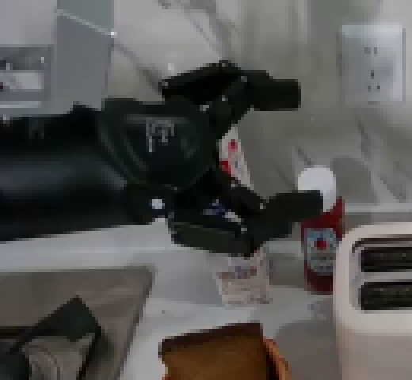
视觉工具实际返回图片 3
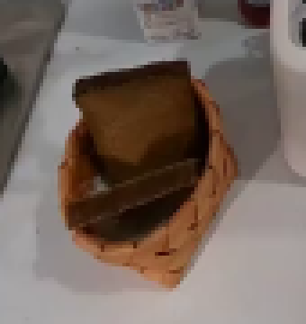
视觉工具实际返回图片 4
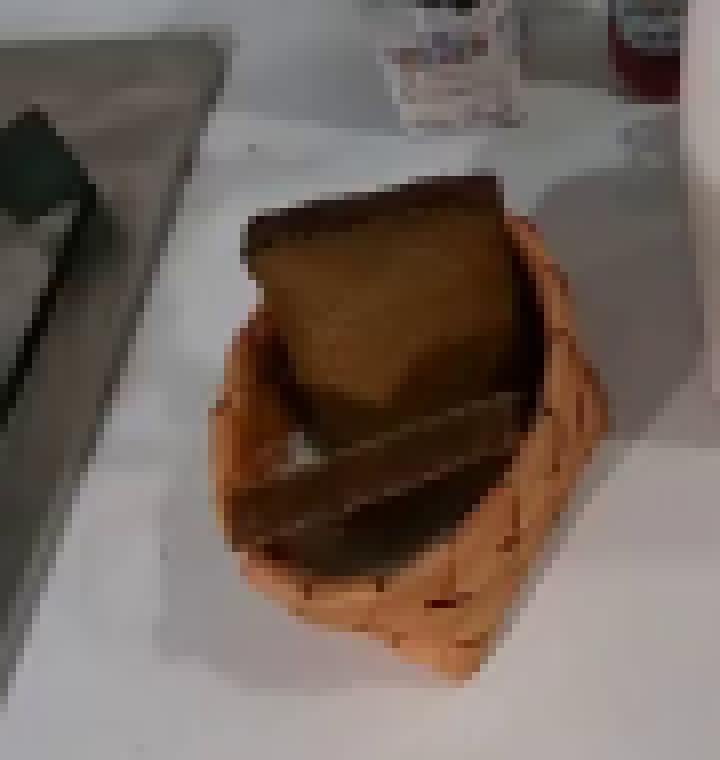
视觉工具实际返回图片 5
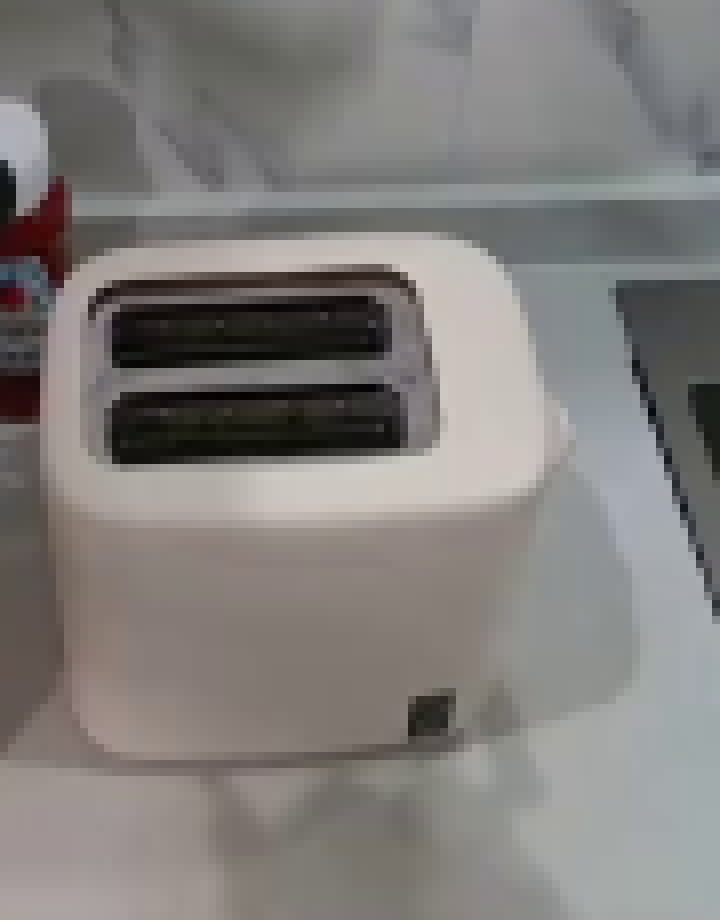
视觉工具实际返回图片 6
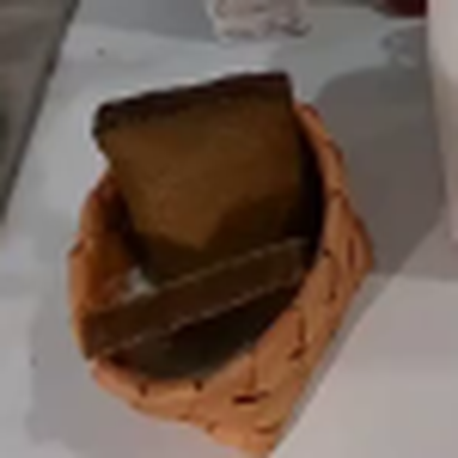
视觉工具实际返回图片 7
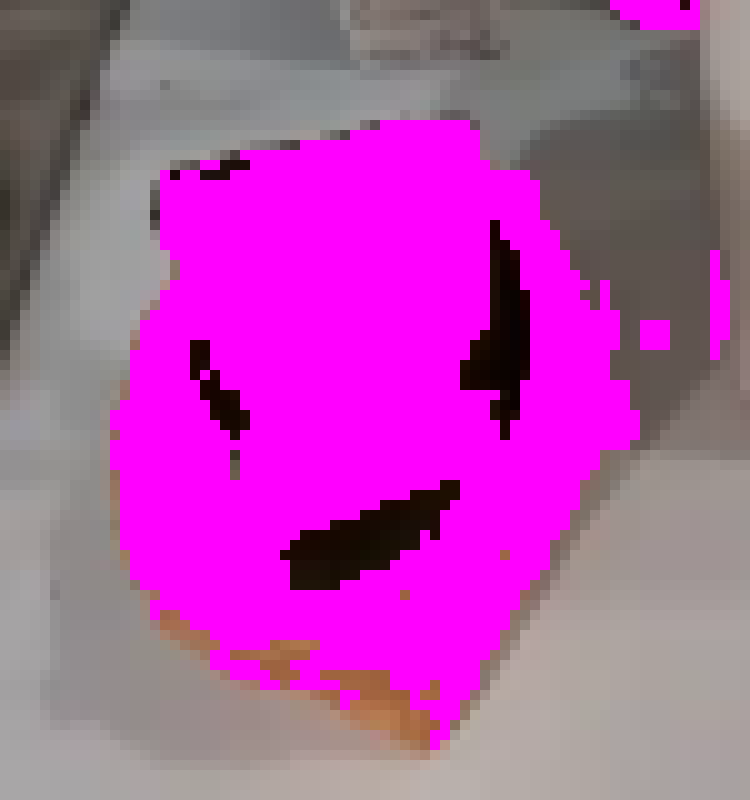
视觉工具实际返回图片 8
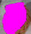
视觉工具实际返回图片 9
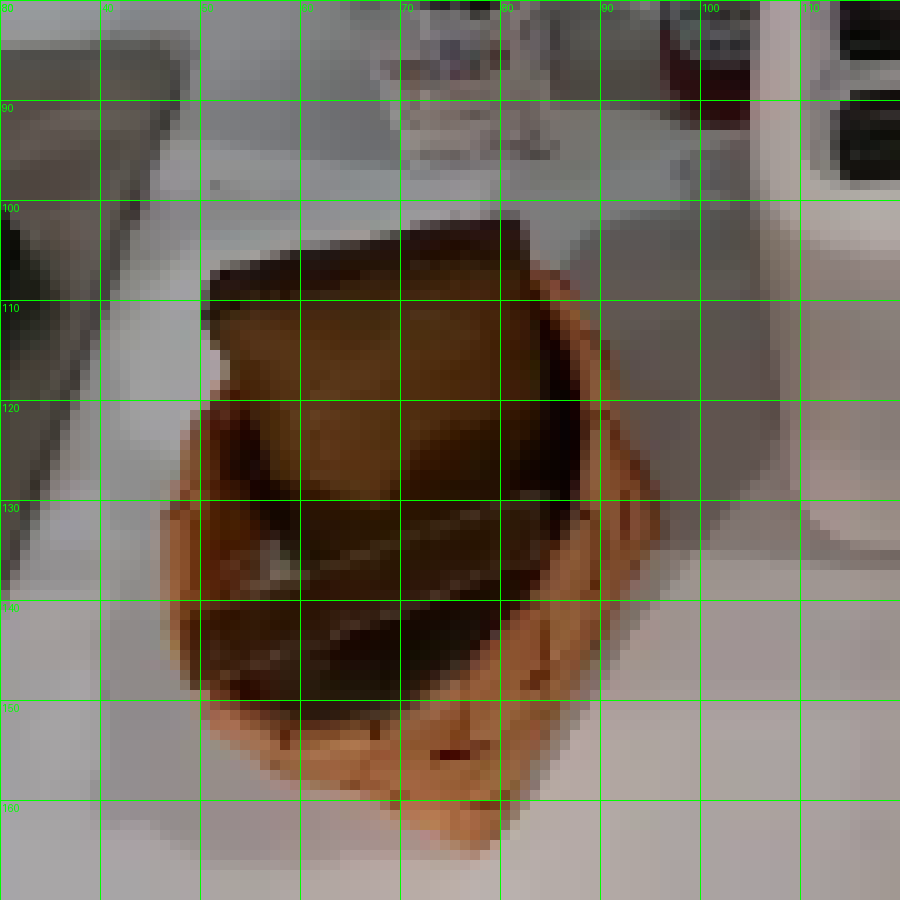
视觉工具实际返回图片 10
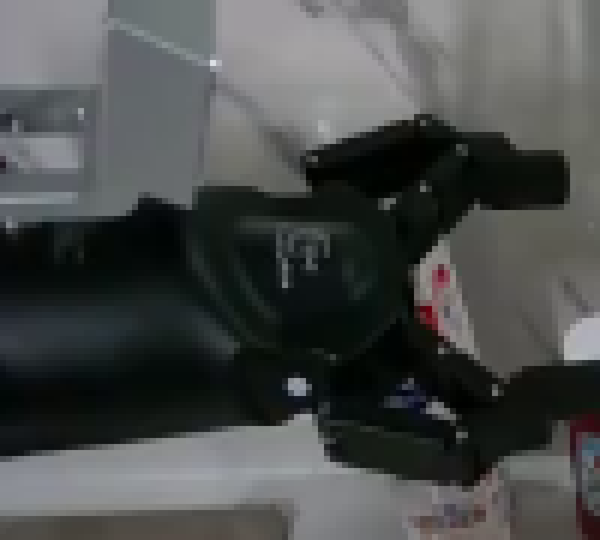
视觉工具实际返回图片 11
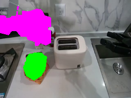
视觉工具实际返回图片 12
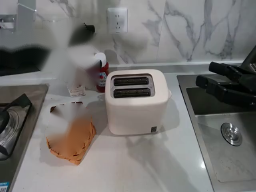
视觉工具实际返回图片 13
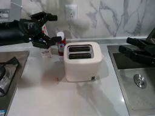
视觉工具实际返回图片 14
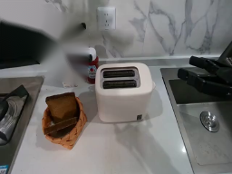
视觉工具实际返回图片 15
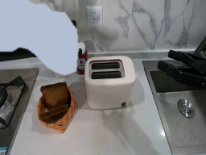
视觉工具实际返回图片 16
视觉工具实际返回图片 17
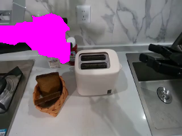
视觉工具实际返回图片 18
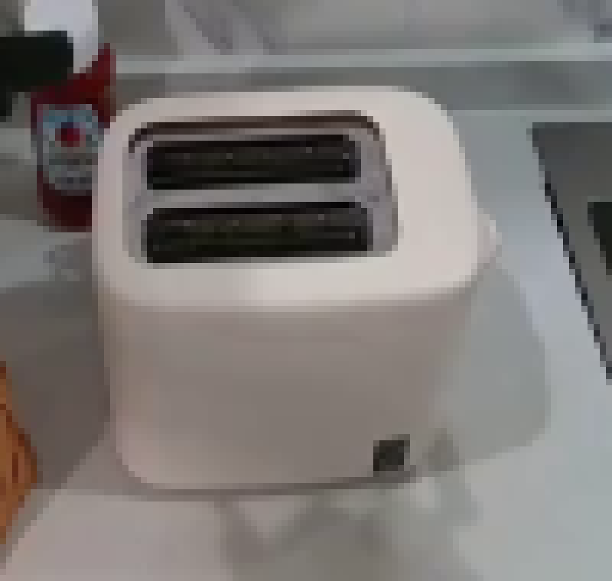
视觉工具实际返回图片 19
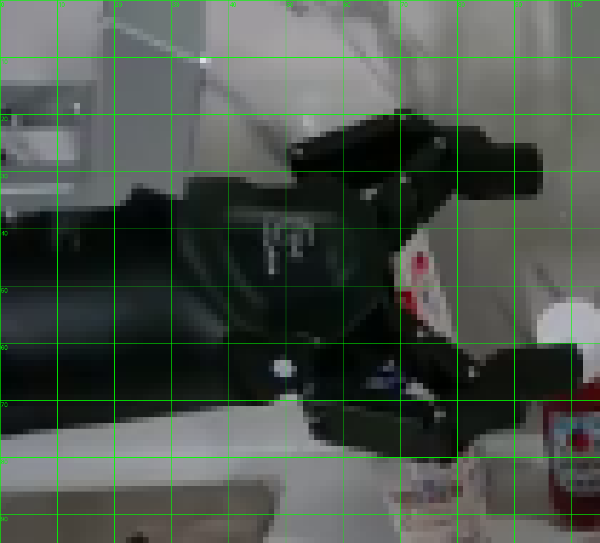
视觉工具实际返回图片 20

视觉工具实际返回图片 21
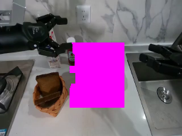
视觉工具实际返回图片 22
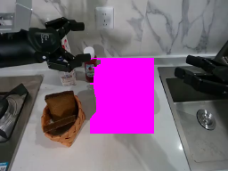
视觉工具实际返回图片 23
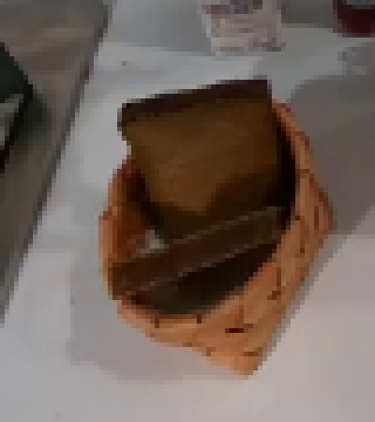
视觉工具实际返回图片 24
视觉工具实际返回图片 25
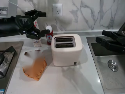
视觉工具实际返回图片 26
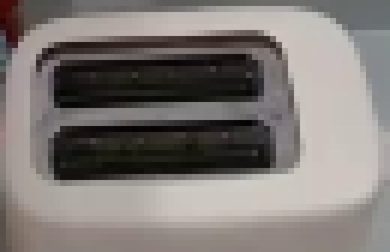
视觉工具实际返回图片 27
视觉工具实际返回图片 28
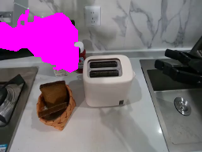
视觉工具实际返回图片 29
视觉工具实际返回图片 30
视觉工具实际返回图片 31
视觉工具实际返回图片 32
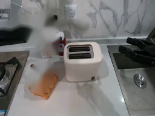
视觉工具实际返回图片 33
视觉工具实际返回图片 34
视觉工具实际返回图片 35
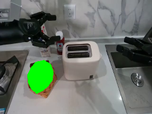
视觉工具实际返回图片 36
视觉工具实际返回图片 37
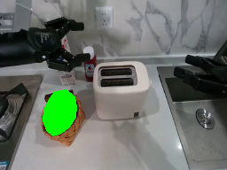
命令 51exit 0
/bin/bash -c 'python generate.py'
命令 52exit 0
/bin/bash -c "python - <<'PY'
from PIL import Image
im=Image.open('first_frame.png').crop((95,55,180,125)).resize((1020,840),Image.Resampling.NEAREST)
im.save('.tmp/slotdetail.png')
PY"命令 53exit 0
/bin/bash -c "python - <<'PY'
import cv2,numpy as np
im=cv2.imread('first_frame.png')
g=cv2.cvtColor(im,cv2.COLOR_BGR2GRAY)
# inspect exact arm mask using flood fill background from broad region? Use segmentation from dark seed with high threshold and only pixels enclosed by arm polygon.
region=np.zeros_like(g);pts=np.array([[0,28],[6,28],[15,35],[20,32],[25,20],[32,13],[41,10],[49,10],[55,19],[61,15],[71,13],[83,17],[91,30],[98,38],[99,72],[98,86],[88,91],[79,86],[73,88],[65,86],[55,82],[46,73],[40,66],[34,60],[27,60],[21,64],[14,63],[0,60]],np.int32);cv2.fillPoly(region,[pts],255)
for t in [80,90,100,110,120,130,140]:
m=np.where((g<t)&(region>0),255,0).astype(np.uint8)
m=cv2.morphologyEx(m,cv2.MORPH_CLOSE,np.ones((5,5),np.uint8))
m=largest if False else m
cv2.imwrite(f'.tmp/arm_t{t}.png',m)
PY"命令 54exit 0
/bin/bash -c "python - <<'PY'
import cv2,numpy as np
im=cv2.imread('first_frame.png')
# define an accurate end-effector mask manually by polygon; this is the black gripper and fingers only, not the background.
m=np.zeros(im.shape[:2],np.uint8)
# polygon traced around dark gripper object; leave thin highlights inside
pts=np.array([[0,33],[8,31],[16,34],[22,31],[27,20],[35,13],[45,13],[53,21],[58,16],[68,14],[78,17],[85,25],[91,36],[98,38],[100,47],[98,59],[95,74],[88,86],[78,86],[72,83],[66,84],[59,81],[53,76],[49,66],[44,62],[38,57],[30,54],[25,58],[18,62],[11,60],[5,62],[0,61]],np.int32)
cv2.fillPoly(m,[pts],255)
cv2.imwrite('.tmp/arm_manual.png',m)
out=im.copy();out[m>0]=[255,0,255];cv2.imwrite('.tmp/arm_manualvis.png',out)
PY"命令 55exit 0
/bin/bash -c "python - <<'PY'
import cv2,numpy as np
im=cv2.imread('first_frame.png')
m=np.zeros(im.shape[:2],np.uint8)
pts=np.array([[0,32],[7,31],[14,34],[19,32],[22,22],[27,15],[34,10],[42,9],[49,11],[54,20],[59,15],[67,13],[76,15],[82,20],[87,29],[91,35],[95,39],[97,49],[96,62],[94,74],[89,84],[82,88],[76,85],[71,81],[64,83],[58,79],[54,72],[49,65],[43,60],[37,56],[31,53],[26,55],[22,61],[17,62],[12,60],[6,61],[0,60]],np.int32)
cv2.fillPoly(m,[pts],255)
cv2.imwrite('.tmp/arm_manual2.png',m)
out=im.copy();out[m>0]=[255,0,255];cv2.imwrite('.tmp/arm_manual2vis.png',out)
# clean static
toast=cv2.imread('.tmp/toast_manual2.png',0)
clean=cv2.inpaint(im,cv2.bitwise_or(m,toast),9,cv2.INPAINT_TELEA)
cv2.imwrite('.tmp/clean_manual2.png',clean)
PY"命令 56exit 0
/bin/bash -c "python - <<'PY'
import cv2,numpy as np
im=cv2.imread('first_frame.png')
m=np.zeros(im.shape[:2],np.uint8)
pts=np.array([[0,32],[7,31],[14,34],[19,32],[22,22],[27,15],[34,10],[42,9],[49,11],[54,20],[59,15],[67,13],[76,15],[82,20],[87,29],[91,35],[95,39],[97,49],[96,62],[94,74],[89,84],[82,88],[76,85],[71,81],[64,83],[58,79],[54,72],[49,65],[43,60],[37,56],[31,53],[26,55],[22,61],[17,62],[12,60],[6,61],[0,60]],np.int32)
cv2.fillPoly(m,[pts],255)
alpha=cv2.GaussianBlur(m,(3,3),0).astype(np.float32)/255
rgba=np.dstack([im,(alpha*255).astype(np.uint8)])
cv2.imwrite('.tmp/arm_manual2_rgba.png',rgba)
# test moving this layer onto clean static, no other content
base=cv2.imread('.tmp/clean_manual2.png')
a=alpha[...,None]
out=base.astype(np.float32)*(1-a)+im.astype(np.float32)*a
cv2.imwrite('.tmp/arm_manual2_layer.png',out.astype(np.uint8))
PY"命令 57exit 0
/bin/bash -c "python - <<'PY'
import cv2,numpy as np
im=cv2.imread('first_frame.png')
m=cv2.imread('.tmp/toast_manual2.png',0)
# save toast crop RGBA in bbox to inspect
rgba=np.dstack([im,m])
cv2.imwrite('.tmp/toast_manual2_rgba.png',rgba)
out=im.copy(); out[m==0]=[180,180,180]; cv2.imwrite('.tmp/toast_cutout2.png',out)
PY"命令 58exit 0
/bin/bash -c 'python generate.py'
命令 59exit 0
/bin/bash -c "python - <<'PY'
import cv2,numpy as np
im=cv2.imread('frames/12.png')
# locate toaster mask / original compare with clean static
orig=cv2.imread('first_frame.png')
# write overlays of pixels differing around toaster and bread
print('diff bbox',cv2.boundingRect((np.max(np.abs(im.astype(int)-orig.astype(int)),axis=2)>10).astype(np.uint8)))
PY"命令 60exit 0
/bin/bash -c "python - <<'PY'
import cv2,numpy as np
im=cv2.imread('frames/19.png')
# upscale area around toast/toaster
cv2.imwrite('.tmp/f19crop.png',cv2.resize(im[45:130,95:185],(900,850),interpolation=cv2.INTER_NEAREST))
PY"命令 61exit 0
/bin/bash -c "python - <<'PY'
import cv2,numpy as np
im=cv2.imread('first_frame.png')
g=cv2.cvtColor(im,cv2.COLOR_BGR2GRAY)
# toaster mask polygon outer silhouette, adjust manually
m=np.zeros(g.shape,np.uint8)
pts=np.array([[103,72],[109,69],[114,65],[126,65],[140,65],[153,67],[164,73],[171,83],[173,99],[171,132],[169,143],[165,146],[147,149],[127,149],[112,148],[103,145],[101,138],[102,98]],np.int32)
cv2.fillPoly(m,[pts],255)
# body should be only white-ish pixels plus all internal region; polygon includes all. use it as silhouette
cv2.imwrite('.tmp/toaster_manual.png',m)
out=im.copy();out[m>0]=[255,0,255];cv2.imwrite('.tmp/toaster_manualvis.png',out)
PY"命令 62exit 0
/bin/bash -c 'python generate.py'
命令 63exit 0
/bin/bash -c 'python generate.py'
命令 64exit 0
/bin/bash -c "python - <<'PY'
import cv2
im=cv2.imread('frames/19.png')
cv2.imwrite('.tmp/finalcrop.png',cv2.resize(im[55:110,110:175],(650,550),interpolation=cv2.INTER_NEAREST))
PY"命令 65exit 0
/bin/bash -c "python - <<'PY'
import cv2,numpy as np
im=cv2.imread('first_frame.png')
# inspect background generated
bg=cv2.imread('frames/04.png')
cv2.imwrite('.tmp/f4crop.png',cv2.resize(bg[65:150,35:180],(1015,595),interpolation=cv2.INTER_NEAREST))
PY"视觉工具实际返回图片 38
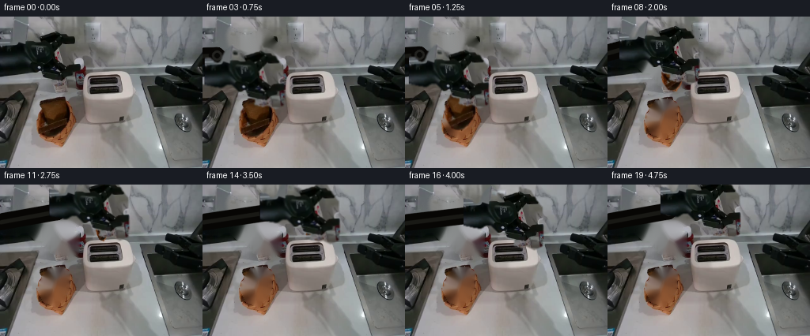
视觉工具实际返回图片 39
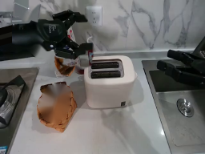
视觉工具实际返回图片 40
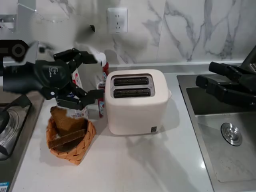
视觉工具实际返回图片 41
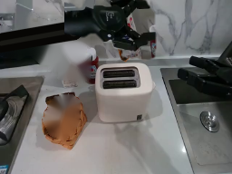
视觉工具实际返回图片 42
视觉工具实际返回图片 43
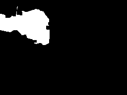
视觉工具实际返回图片 44
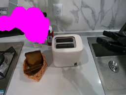
视觉工具实际返回图片 45
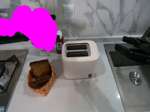
视觉工具实际返回图片 46
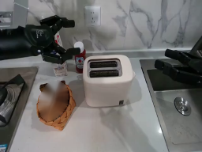
视觉工具实际返回图片 47
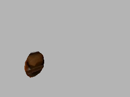
视觉工具实际返回图片 48
视觉工具实际返回图片 49
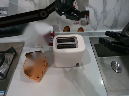
视觉工具实际返回图片 50
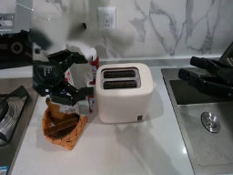
视觉工具实际返回图片 51
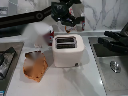
视觉工具实际返回图片 52
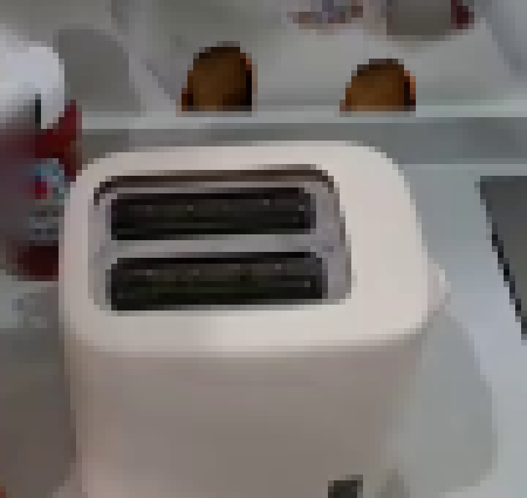
视觉工具实际返回图片 53
视觉工具实际返回图片 54
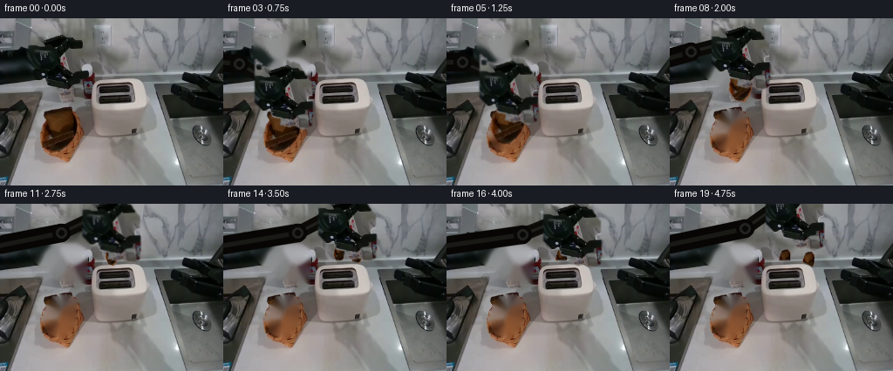
视觉工具实际返回图片 55

视觉工具实际返回图片 56
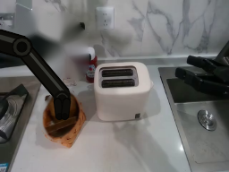
视觉工具实际返回图片 57
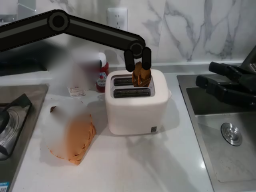
视觉工具实际返回图片 58
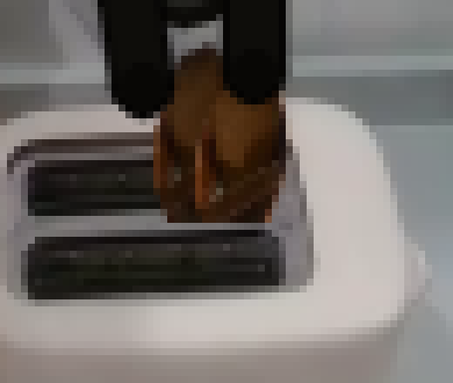
视觉工具实际返回图片 59
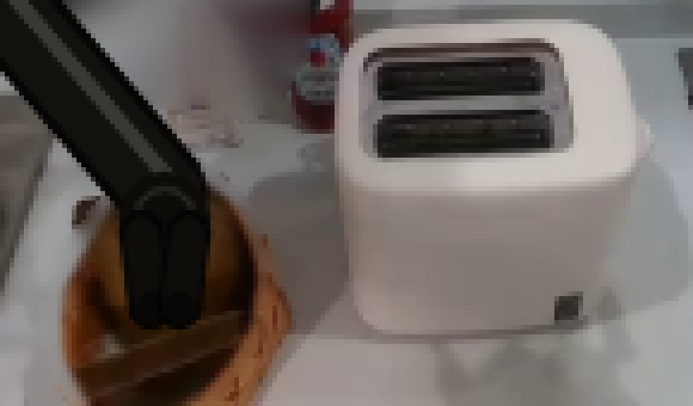
保存候选 5 份；完成命令 65 次；可验证图片返回 59 张。原始 API 响应与完整日志保留在本地。